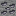
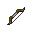
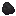
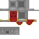
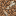
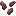
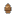

УвеличитьНаблюдение через подзорную трубу Дождись завершения наблюдения и подтверждения записи.Снимок Wicklen · Wicklen · Chronicles 0.4.3Настоящий кадр из отдельного локального игрового мира.
В Chronicles ты записываешь встречи, выполняешь поручения духа и получаешь припасы. Начать можно с подзорной трубы; для первой награды бой не обязателен. Здесь описан Chronicles 0.4.4 из нашей сборки.
Посмотри через неё на существо примерно две секунды, затем открой дневник клавишей G.
Найди записанную станцию или двор и посмотри, доступен ли «Первый огонь».
Где взять трубу и что нести с собой
Медь добывается из медной руды. Осколки аметиста растут на кластерах внутри аметистовых жеод под землёй. Для трубы нужны именно осколок и слитки, а не аметистовый блок и сырая медь.
В поход возьми еду, факелы, бумагу и оружие для обычных ночных мобов. Станции и дворы нужно найти в мире и записать наблюдением; сам дневник не показывает все неизвестные места.
Как записать существо или место
Возьми подзорную трубу и наведи её на видимую цель.
Удерживай цель в поле зрения около двух секунд. Если между вами стена или цель вышла из кадра, наведи снова.
После уведомления открой G и найди запись. У неё можно прочитать описание и сохранить личное имя.
Для места осмотри саму постройку. Обычный бой поблизости не считается прохождением её испытания.
УвеличитьВыбор пути в «Первом огне» Дневник показывает условия, прогресс и награду выбранной вылазки.Снимок Wicklen · Wicklen · Chronicles 0.4.3Настоящий кадр из отдельного локального игрового мира.
«Первый огонь»: условия и награда
Сначала прими историю у выбранной станции. Действия, сделанные раньше, не закрывают новые условия. Разведка доступна всегда. Второй путь зависит от станции: при подходящем дворе — испытание, иначе два наблюдения.
Путь
Что сделать
Что обычно мешает
Разведка
Две поверхностные отметки в выделенной области 192×192: не ближе 32 блоков к станции и минимум в 48 блоках друг от друга.
Отметки вне выделенной области, слишком близко к станции или друг к другу.
Испытание при доступном дворе
После принятия успешно пройти испытание именно выбранного двора.
Пройден другой бой или не выбрана соответствующая ветка истории.
Наблюдения вместо недоступного испытания
После принятия собрать два новых полевых свидетельства о существах.
Встреча сделана до принятия или повторена слишком близко к уже записанной.
Как поставить две отметки
Область разведки — квадрат 192×192 блоков, расположенный с одной стороны станции. Это не круг радиусом 192 блока. Ориентируйся на область, указанную в задании.
Выйди на поверхность внутри отмеченного квадрата.
Первую отметку поставь не ближе 32 блоков от станции.
Отойди минимум на 48 блоков от первой отметки и поставь вторую, оставаясь в области.
Вернись к истории и забери награду: 8 факелов, 4 хлеба и 4 бумаги. Завершённое условие само предметы не выдаёт.
Какие наблюдения засчитываются
Для ветки наблюдений нужны два новых полевых свидетельства после принятия истории. Привязки к квадрату разведки у этой ветки нет. Можно наблюдать разные виды. Повтор знакомого вида засчитывается, если новая встреча достаточно далеко: не меньше 128 блоков от предыдущей записи этого вида.
Если счётчик не изменился, проверь время принятия истории и расстояние до прошлого наблюдения. Простое повторное наведение на стоящее рядом животное нового свидетельства не даёт.
УвеличитьПолевой стол Полевой блокнот привязывается к столу картографа.Снимок Wicklen · Wicklen · Chronicles 0.4.3Настоящий кадр из отдельного локального игрового мира.
Полевой стол и припасы за открытия
Полевой блокнот делается из книги, бумаги и нити без определённого расположения. Используй его на столе картографа, чтобы привязать место получения припасов.
После привязки сделай три первых открытия и вернись к столу. Награда — 8 факелов, 4 хлеба и 4 бумаги. Если переезжаешь, используй блокнот с зажатым Shift на другом столе картографа: накопленный прогресс сохранится.
Коллекции дают отдельные разовые награды: за три существа — 8 бумаги, за два места — 12 факелов. Их тоже нужно забрать в дневнике.
Испытание двора
У записанного подходящего двора можно подготовить встречу, выбрать сложность и вступить в неё. В текущем испытании две волны, без отдельного босса; одновременно появляется не больше восьми противников волны.
Оставайся в пределах двора. После выхода есть пять секунд на возвращение. В группе проверь, кто вступил в испытание, прежде чем начинать. Победа в другой битве или обычном Gateway не заменяет победу в выбранном дворе.
Фонарь странника даёт поглощение I на 20 секунд и скорость I на 10 секунд. Общее время восстановления — 60 секунд; несколько фонарей не обходят его.
Частые вопросы
Запись друга видна ему, а у меня пусто. Почему?
Открытия личные. Самостоятельно наблюдай цель; чужой дневник не разблокирует твою коллекцию.
Три наблюдения сделаны, а стол не даёт припасы.
Нужны новые первые открытия после привязки, а не любые три повторных наблюдения. Проверь, что используешь привязанный стол и есть место для награды.
Где продолжение сюжета после «Первого огня»?
Не каждое дальнейшее путешествие является новым сюжетным этапом. В установленном срезе продолжай коллекции, поручения и добровольные испытания; новые сюжетные главы не обещаны этим гайдом.
В Wicklen
Версия Chronicles в сборке — 0.4.4. Новое окно духа пока обсуждается в локальных макетах.
Руководство рассчитано на указанные версии сборки. Более новая wiki может описывать другие рецепты и интерфейсы; при расхождении проверь требования в игре.
Исследования · Wicklen 0.6.0
Field Guide: наблюдения
УвеличитьНаблюдение через подзорную трубу Удерживай взгляд на цели и дождись завершения сканирования.Снимок автора · Field Guide
Field Guide открывает статьи о встреченных существах и растениях. В статье можно прочитать сведения о цели и оставить свою заметку. Открытия сохраняются лично для тебя на этом сервере.
Содержание
Быстрый старт
Возьми подзорную трубу и найди обычное животное или растение.
Держи цель в поле зрения, пока не появится уведомление об открытии.
Прочитай запись и добавь ориентир: биом, координаты или ближайшую постройку.
С чего начать поиски
Для первых записей достаточно окрестностей дома: животные на равнине, деревья и растения у леса. Затем можно пройти к реке, болоту или другому биому. Новая местность даёт больше незнакомых целей, чем повторный обход одного загона.
Подзорная труба делается из двух медных слитков и осколка аметиста. Медь ищи в пещерах, аметист — внутри подземных жеод. В сетке верстака поставь осколок над двумя слитками в одном столбце.
Как открыть статью
Наведи трубу на саму цель, а не на землю рядом.
Держи её видимой до завершения наблюдения. Стена и густая листва могут закрывать цель.
Открой полученную запись. Название помогает отличить похожие виды.
Повтори с другим существом или растением. Другой игрок не открывает записи за тебя.
УвеличитьКатегории полевого справочника Здесь видно, какие записи уже открыты, а какие ещё предстоит найти.Снимок автора · Field Guide
Что есть в записи
Описание объясняет особенности существа или растения. Набор сведений зависит от цели: у одной есть характеристики и добыча, у другой — только название и текст. Установленные дополнения расширяют описания для части модовых целей.
Сведение
Для чего полезно
Название и категория
Понять, что именно изучено, и отличить похожие цели.
Описание
Узнать особенности и возможные взаимодействия.
Добыча и характеристики
Подготовиться к встрече и решить, нужен ли бой.
Личная заметка
Запомнить собственный опыт и ориентир для следующего похода.
УвеличитьЗапись об изученном существе После наблюдения открывается страница с описанием и свойствами цели.Снимок автора · Field Guide
Как записать место, чтобы потом вернуться
В личной заметке напиши конкретный ориентир. Например: «болото к западу от базы, за рекой; рядом каучуковые деревья». Для редкой структуры полезнее координаты и вход, чем запись «нашёл далеко».
Заметки не заменяют точку дома или активированный путевой камень. Если собираешься возвращаться за ресурсами, сохрани дорогу отдельно.
Почему модовая цель иногда не открывается
Field Guide поддерживает определённые типы целей. Наличие существа в сборке не гарантирует отдельную статью с полным описанием. Убедись, что цель видна через трубу; если обычные животные открываются, а выбранный модовый объект нет, причина может быть в его поддержке.
В Chronicles свои записи и условия поручений. Для задания могут требоваться наблюдения после принятия или повторная встреча далеко от предыдущей. Открытая ранее статья Field Guide не закрывает такие условия задним числом.
Частые вопросы
Нужно ставить отдельный мод с описаниями самому?
Для игры на Wicklen используй готовый клиентский комплект. Дополнения, входящие в сборку, уже выбраны; случайный другой набор может изменить подсказки.
Прогресс должен быть одинаковым на разных серверах?
Нет. Справочник сохраняет личный прогресс отдельно для сервера. Статья из другого мира не обязана быть открыта здесь.
Почему в статье мало текста?
Описание зависит от данных цели и установленных дополнений. Короткая статья не означает, что сканирование не завершилось.
В Wicklen
В 0.6.0 возвращены редкие деревни Repurposed Structures в бамбуковых джунглях, гигантской тайге и горах. Они генерируются только в новых чанках; уже созданная карта не перестраивается.
Руководство рассчитано на указанные версии сборки. Более новая wiki может описывать другие рецепты и интерфейсы; при расхождении проверь требования в игре.
Ремесло · Wicklen 0.6.0
Tech Reborn: первая мастерская
УвеличитьСбор сока каучукового дерева Начало технической цепочки: сок дерева понадобится для резины.Снимок автора · Tech Reborn
Первая мастерская состоит из твердотопливного генератора и одного электрического станка. Ниже — вся начальная цепочка: где найти каучук и свинец, как сделать провода, батарею, корпус и машины. Схемы взяты из Tech Reborn 6.2.1.
Содержание
Быстрый старт
Найди каучуковые деревья в лесу, тайге или обычном болоте; сними сок краником.
Добудь медь, железо, свинец и красную пыль. Переплавь часть железных слитков повторно.
Собери генератор, затем электрическую печь или дробитель по схемам ниже.
Где искать материалы
Каучуковое дерево отличается верхушкой, выступающей над кроной, и пятнами сока на стволе. В этой версии оно добавляется в лесные и таёжные биомы, а также в обычное болото. Саженец позволяет перенести деревья к базе.
Свинец нужен уже для первой батареи. В обычном мире его генерация задана от Y −24 до 40. Для олова диапазон другой: Y 25–80. Эти значения относятся к новым участкам мира; уже исследованная пещера не получает руду после установки мода.
Материал
Как получить
На что пойдёт
Сок каучукового дерева
Краником по пятну на стволе; пятна со временем восстанавливаются.
Переплавка в резину.
Медь
Медная руда → сырая медь → слиток.
Кабель.
Железо
Железная руда → слиток; ещё одна плавка слитка → очищенное железо.
Печь, корпус и схема.
Свинец
Свинцовая руда в пещерах указанного диапазона → слиток.
Красная батарея.
Красная пыль
Краснокаменная руда под землёй.
Батарея и электронная схема.
Сок каучукового дерева
Биом / измерение
Леса, тайга и обычное болото.
Где смотреть
Пятна на стволе каучукового дерева. У кроны есть выступающая верхушка.
Как получить
Используй краник по пятну; затем переплавь сок в резину.
Свинцовая руда

Биом / измерение
Обычный мир, под землёй: Y −24…40.
Где смотреть
Каменные породы в пещерах и шахтах. На изображении — текстура обычной свинцовой руды.
Как получить
Добудь руду и переплавь добытое в свинцовые слитки для батареи.
Оловянная руда
Биом / измерение
Обычный мир: Y 25…80.
Где смотреть
Каменные породы указанной высоты. На изображении — текстура обычной оловянной руды.
Как получить
Добудь и переплавь. Для первой красной батареи требуется свинец, а не олово.
Сок, резина и медный провод
Сделай краник из четырёх досок и палки. Нажми им по пятну сока на дереве, затем переплавь сок в обычной печи. Для кабеля нужна готовая резина.
Три медных слитка в ряд дают шесть медных кабелей. Один кабель и одна резина дают один изолированный кабель. На электронную схему нужно шесть таких кабелей; ещё один уйдёт в батарею.
Очищенное железо (Refined Iron) получается повторной плавкой обычного железного слитка. Для базового корпуса нужно восемь таких слитков. Один дополнительный слиток нужен в центре электронной схемы.
Красная батарея требует четыре слитка свинца, две красной пыли и изолированный медный кабель. Олово в этом рецепте не используется.
Электрическая печь заменяет обычную плавку питанием от сети. Сначала сделай железную печь: пять железных слитков и обычная печь по схеме. Затем добавь электронную схему и две красной пыли.
Дробитель нужен для рецептов измельчения. Он собирается из трёх кремней, двух булыжников, корпуса и схемы. Не рассчитывай на удвоение любого сырья: например, закреплённый рецепт алмазной руды в дробителе даёт один алмаз. Блок руды, сырая руда и пыль могут иметь разные рецепты.
Положи небольшую партию вручную и дождись завершения. Затем в настройках станка назначь стороны ввода и вывода и включи нужные импорт или экспорт. Кабель переносит энергию; для предметов нужен отдельный перенос, например воронка.
Если обработка остановилась, посмотри запас энергии и выходной слот. Полный выход мешает работе даже при наличии питания. Если вручную рецепт работает, а с воронкой нет, проверь сторону доступа к слотам.
Следующие машины выбирай по конкретному продукту. Для части компонентов понадобятся станки, сплавы и более высокая ступень питания. Перед подключением нового станка сверяй его уровень с генератором и кабелем.
Частые вопросы
Почему генератор заряжен, а станок не работает?
Посмотри энергию внутри станка. Затем проверь соединение и сторону подключения; запас соседнего блока не доказывает, что питание дошло.
Дробитель не удвоил руду. Это ошибка?
Не обязательно. Сравни рецепт для точного входа: блока руды, сырой руды или другого материала. Выход зависит от рецепта.
Можно соединить всё любым проводом?
Нет. У элементов есть характеристики и ступени. Для нового потребителя проверь совместимость до подключения.
Руководство рассчитано на указанные версии сборки. Более новая wiki может описывать другие рецепты и интерфейсы; при расхождении проверь требования в игре.
Развитие · Wicklen 0.6.0
Навыки и дерево развития
УвеличитьБоевое дерево навыков Выбирай узлы по связям дерева и проверяй доступные очки.Снимок автора · Default Skill Trees
В сборке есть два дерева Pufferfish’s Skills: боевое и шахтёрское. Очки дают бонусы персонажу. Они не выбирают класс навсегда и не заменяют книги заклинаний.
Содержание
Быстрый старт
Открой дерево клавишей K. Если окно не появилось, найди привязку Skills в настройках управления.
Зарабатывай опыт подходящим занятием: сражайся или добывай камень и руды.
Выбери доступный узел, прочитай бонус и стоимость, затем подтверди покупку.
Какой опыт за что отвечает
У Skills, Minecraft и Arcana отдельные показатели. Уровни над обычной полосой опыта не превращаются автоматически в очки навыков.
Система
Где смотреть
За что отвечает
Pufferfish’s Skills
Экран дерева, стандартная K.
Очки и связанные узлы навыков.
Опыт Minecraft
Обычная полоса уровня.
Зачарование и другие операции, расходующие этот опыт.
Spell Engine / классовые моды
Экипированная книга и интерфейс заклинаний.
Доступные заклинания и их требования.
Arcana Novum
Том и профиль Arcana.
Исследования, концентрация и усиления артефактов.
Как получить первые очки
Боевое дерево развивается от убийств противников. Шахтёрское — от добычи подходящих камней и руд по правилам Default Skill Trees. Начни с обычной шахты и доступных наземных противников; отдельный алтарь или предмет для запуска не нужен.
Проверь счётчик до занятия и после. Если один блок не дал заметного изменения, это ещё не означает ошибку: у источников разная ценность. Бессмысленно тратить обычные уровни у зачарователя в надежде открыть узел Skills.
Посмотри количество свободных очков в выбранном дереве.
Выбери ближайший доступный узел и прочитай его описание.
Проследи связь к исходной части дерева: к далёкому узлу может требоваться цепочка предыдущих.
Подтверди покупку. Если узел недоступен, проверь очки и необходимые связи, а не только его значок.
Что выбирать для своего персонажа
Для начала удобнее улучшать то, чем уже пользуешься: шахтёру — добычу, бойцу — подходящие боевые свойства. Перед дорогим узлом посчитай стоимость всей цепочки до него.
Навык не даёт сам по себе книгу заклинаний, руны или право держать любой посох. Для мага отдельно собери оружие, свяжи книгу и надень её. Передача снаряжения другу не передаёт ему купленные тобой навыки.
Если ошибся с выбором
Не рассчитывай на бесплатный сброс в любой момент: доступность сброса определяется установленной конфигурацией. Административные команды из описания мода не являются обычной игровой услугой.
Если K занята другой функцией, назначь дереву отдельную клавишу. В нашей сборке несколько модов добавляют окна и действия; конфликт управления не означает, что прогресс пропал.
Частые вопросы
Я поднял обычный уровень, почему не появилось очко?
Обычный опыт Minecraft и опыт категории навыков считаются отдельно. Посмотри показатель внутри нужного дерева.
Нужно сначала выбрать класс?
Для готовых деревьев навыков обязательного выбора класса из Wizards или Archers нет.
У друга открыто больше узлов. Можно перенести его прогресс?
Дерево относится к персонажу. Чужие открытые узлы не являются твоими доступными бонусами.
Руководство рассчитано на указанные версии сборки. Более новая wiki может описывать другие рецепты и интерфейсы; при расхождении проверь требования в игре.
Развитие · Wicklen 0.6.0
Классы, заклинания и снаряжение
УвеличитьПрименение магического заклинания Для заклинания нужны совместимые книга, оружие и расходники.Снимок автора · Wizards (RPG Series)
Магические способности здесь зависят от экипировки. Для первого набора нужны подходящее оружие, связанная книга заклинаний и руны. Оружие, лежащая в сумке книга и надетая книга выполняют разные роли.
Содержание
Быстрый старт
Выбери направление: лучник, волшебник, паладин или жрец. Сравнение есть ниже.
Сделай первое оружие и Spell Binding Table. Для волшебника проще начать с жезла Arcane.
Свяжи книгу, надень её в предназначенный слот и возьми руны, указанные у заклинания.
Как отличаются направления
Wizards даёт школы Arcane, Fire и Frost. Paladins & Priests — боевые и лечебные наборы. Archers использует стрелковое оружие. Броня и украшения могут усиливать выбранную школу, но сначала достаточно получить работающую книгу и оружие.
Направление
Основа комплекта
Что проверить первым
Лучник
Лук или арбалет, Archery Manual, подходящие боеприпасы.
Заклинание рассчитано на выбранное стрелковое оружие.
Волшебник
Жезл или посох, книга школы Arcane, Fire либо Frost.
Совместимость школы оружия, книги и нужных рун.
Паладин
Подходящее ближнее оружие и Libram.
Какие защитные и боевые действия даёт выбранная книга.
Жрец
Holy-оружие и Holy Book.
Выбор цели, лечебное действие и расходники.
Первое оружие: точные рецепты
Жезл Arcane делается из золотого слитка и осколка аметиста по диагонали. Для огненного жезла вместо аметиста нужен порох. Аметист ищи в подземных жеодах, порох — у криперов или в сундуках с подходящей добычей.
Жезл послушника (Acolyte Wand) требует четыре палки и нить. Составной длинный лук — две палки, кость и три нити. Это начальные предметы, а не конечный комплект выбранной роли.
Жезл арканы ×1
Верстак · расположение как на схеме
Осколок аметистаЗолотой слиток
→
Жезл арканы×1
1 ×Осколок аметиста
1 ×Золотой слиток
Рецепт из нашей сборки
wizards-fabric-3.1.4+26.3.jar
data/wizards/recipe/wand_arcane.json
Жезл огня ×1
Верстак · расположение как на схеме
ПорохЗолотой слиток
→
Жезл огня×1
1 ×Порох
1 ×Золотой слиток
Рецепт из нашей сборки
wizards-fabric-3.1.4+26.3.jar
data/wizards/recipe/wand_fire.json
Жезл прислужника ×1
Верстак · расположение как на схеме
ПалкаПалкаНитьПалкаПалка
→
Жезл прислужника×1
4 ×Палка
1 ×Нить
Рецепт из нашей сборки
paladins-fabric-3.1.4.1+26.3.jar
data/paladins/recipe/acolyte_wand.json
Составной длинный лук ×1
Верстак · расположение как на схеме
ПалкаНитьКостьНитьПалкаНить
→

Составной длинный лук×1
2 ×Палка
3 ×Нить
1 ×Кость
Рецепт из нашей сборки
archers-fabric-3.1.4+26.3.jar
data/archers/recipe/composite_longbow.json
УвеличитьРабота Rune Altar Интерфейс создания рун. Точный выход смотри в REI своей сборки.Иллюстрация автора · Runes
Книга школы, цена обучения и книжные полки
Для стола привязки нужны книга, два осколка аметиста, золотой слиток и три полированных диорита. Поставь стол и открой его. Для создания первой книги школы положи в основной слот обычную книгу и выбери школу из списка. В нашей версии создание требует первого уровня опыта и тратит один уровень; лазурит на саму книгу не нужен.
Затем положи полученную книгу обратно в стол и выбери заклинание. Для обычного обучения нужны опыт и лазурит во втором слоте. В таблице ниже требуемый уровень — это порог до нажатия, а цена — сколько уровней спишется. Например, для заклинания второго ранга нужно иметь уровень 20, но обучение снимает шесть уровней и шесть лазуритов.
Поставь книжные полки вокруг стола по правилам стола зачарований: на расстоянии двух блоков, с пустым промежутком. Нужны полки, которые распознаются как источник силы зачарований; случайная декоративная мебель не подойдёт. Для четвёртого ранга в этой версии нужны 18 действующих полок: стандартного круга из 15 может не хватить.
Цены ниже относятся к обычному обучению заклинаниям Wizards, Paladins & Priests и Archers в установленных версиях. У применения свитков другой расчёт. Перед подтверждением всё равно сверь цену у выбранной способности в самом столе.
После обучения надень книгу в её слот экипировки и возьми совместимое оружие. Книга в обычном инвентаре не заменяет экипированную. Если заклинание видно, но не срабатывает, проверь нужные руны, цель и восстановление.
Простые руны можно изготовить без алтаря: один подходящий камень и реагент дают две руны. В качестве каменной основы подходит материал для каменных инструментов, например булыжник. Огненный реагент — уголь, древесный уголь или порох.
Нужная школа и расход указаны у заклинания. Возьми запас перед походом: наличие жезла не отменяет расходники. Ниже показаны начальные ручные рецепты и отдельный алтарь для дальнейших рецептов Runes.
Руна тайнства ×2
Верстак · расположение любое
Камень для каменных инструментов, например булыжникОсколок аметиста
→
Руна тайнства×2
1 ×Камень для каменных инструментов, например булыжник
1 ×Осколок аметиста
Рецепт из нашей сборки
runes-fabric-1.3.2+26.3.jar
data/runes/recipe/arcane_rune_small_hand.json
Руна огня ×2
Верстак · расположение любое
Камень для каменных инструментов, например булыжник

Уголь, древесный уголь или порох
→
Руна огня×2
1 ×Камень для каменных инструментов, например булыжник
1 ×Уголь, древесный уголь или порох
Рецепт из нашей сборки
runes-fabric-1.3.2+26.3.jar
data/runes/recipe/fire_rune_small_hand.json
Руна льда ×2
Верстак · расположение любое
Камень для каменных инструментов, например булыжникСнежок
→
Руна льда×2
1 ×Камень для каменных инструментов, например булыжник
1 ×Снежок
Рецепт из нашей сборки
runes-fabric-1.3.2+26.3.jar
data/runes/recipe/frost_rune_small_hand.json
Руна исцеления ×2
Верстак · расположение любое
Камень для каменных инструментов, например булыжникКусочек золота
→
Руна исцеления×2
1 ×Камень для каменных инструментов, например булыжник
1 ×Кусочек золота
Рецепт из нашей сборки
runes-fabric-1.3.2+26.3.jar
data/runes/recipe/healing_rune_small_hand.json
Алтарь создания рун ×1
Верстак · расположение как на схеме
Золотой слитокКамень, гладкий камень, полированный диорит или андезитЗолотой слитокКамень, гладкий камень, полированный диорит или андезитКамень, гладкий камень, полированный диорит или андезитКамень, гладкий камень, полированный диорит или андезитКамень, гладкий камень, полированный диорит или андезит
→

Алтарь создания рун×1
2 ×Золотой слиток
5 ×Камень, гладкий камень, полированный диорит или андезит
Рецепт из нашей сборки
runes-fabric-1.3.2+26.3.jar
data/runes/recipe/rune_crafting_altar.json
УвеличитьРецепт алтаря рун Авторский пример рецепта; перед крафтом проверь его в REI.Иллюстрация автора · Runes
Первое применение
Проверь, что книга надета, а нужное оружие находится в руке.
Выбери заклинание на панели. Смотри назначенные клавиши в управлении Spell Engine.
Наведи на допустимую цель и держи требуемую дистанцию. Для лечебной способности целью может быть союзник.
Используй способность. Если она не сработала, проверь руны, восстановление и совместимость оружия со школой.
Что улучшать после первого заклинания
Сравни школу и свойства следующего посоха или жезла с текущей книгой. Более дорогой предмет другой школы не обязательно усиливает твои способности. Броня и Jewelry помогают собрать комплект под выбранные свойства.
Relics (RPG Series) относится к этому набору модов. Relics & Artifacts из отдельного гайда работает иначе: многие его предметы достаточно держать в обычном инвентаре. Не ищи для каждой найденной реликвии обязательный слот кольца.
Частые вопросы
Могу я поменять направление после первой книги?
Сам набор предметов не является обязательным необратимым выбором класса. Для другого направления всё равно понадобятся его книга, оружие и расходники.
Почему книга Fire не работает с моим набором?
Проверь совместимость школы и оружия, а также экипировку книги. Одинаковый слот ещё не означает одинаковые требования.
Нужно развивать Arcana ради заклинаний Wizards?
Нет. Arcana использует собственную прогрессию и Том. Очки её усилений не заменяют книги Spell Engine.
Руководство рассчитано на указанные версии сборки. Более новая wiki может описывать другие рецепты и интерфейсы; при расхождении проверь требования в игре.
Развитие · Wicklen 0.6.0
Arcana Novum: исследования
УвеличитьИзготовление в Starlight Forge Кузница используется для создания Arcana-предметов.Снимок автора · Arcana Novum
Arcana Novum добавляет собственные исследования и артефакты. Начало — изготовить бумагу, получить Том и выбрать первый предмет в его справочнике. В Wicklen мод стоит на сервере; модели на клиенте показывает ресурспак.
Содержание
Быстрый старт
Включи ресурспак wicklen-polymer-0.5.0.zip; перевод ru-mods.zip поставь выше него.
Сделай четыре листа Mundane Arcane Paper по рецепту ниже.
Брось их вместе с оком Эндера на стол зачарований и забери Том.
Первый Том: материалы и действие
Для четырёх листов Mundane Arcane Paper нужны четыре бумаги и одна зачарованная книга. Бумага делается из сахарного тростника. Зачарованную книгу можно получить у зачарователя, в добыче или торговлей; обычная книга в этом рецепте не подходит.
Затем потребуются око Эндера и размещённый стол зачарований. Око делается из эндер-жемчуга и огненного порошка. Положить эти предметы в сетку верстака недостаточно: брось четыре особых листа и око предметами на стол зачарований.
Обычная магическая бумага ×4
Верстак · расположение как на схеме
БумагаБумагаЧародейская книгаБумагаБумага
→
Обычная магическая бумага×4
4 ×Бумага
1 ×Чародейская книга
Рецепт из нашей сборки
arcananovum-4.0.12+26.3.jar
data/arcananovum/recipe/mundane_arcane_paper.json
Как выполнить исследование
Открой Том, найди Compendium и выбери интересующий предмет. На его странице посмотри исследовательские требования. Они могут требовать предметы, открытия или действия; накопление большого количества обычного опыта не закрывает их автоматически.
Выбери один предмет и открой именно его страницу исследования.
Прочитай невыполненные требования и выполни указанные действия в мире.
Вернись в Том и проверь изменившиеся пункты.
После открытия исследования посмотри материалы и рабочее сооружение для изготовления. Исследованный предмет ещё нужно создать.
УвеличитьCompendium Arcana Novum Список артефактов в Томе. Исследования и требования открываются внутри него.Снимок автора · Arcana Novum
Starlight Forge: где строить и как сверять схему
Кузница звёздного света — одна из первых больших целей. Она собирается как многоблочная конструкция. В описании автора основание содержит четыре обсидиана, четыре плачущих обсидиана и алмазный блок, но форма и центральный блок тоже обязательны.
Плачущий обсидиан ищи у разрушенных порталов или получай обменом с пиглинами. Обычный обсидиан его не заменяет. Для всей конструкции и её рабочей области оставь свободное место: Forge работает с областью 17×11×17 блоков.
Используй схему и показ постройки из Тома нашей версии. По фотографии нельзя проверить скрытый слой и ориентацию. Если Forge не распозналась, сравни каждый слой и центральный блок, затем окружающие блоки; добавление дорогих ингредиентов это не исправит.
Изготовление первого артефакта
Открой изученный рецепт в Томе. В нём указаны количества, нужный Arcana-блок и дополнительные условия. Разложи материалы в предусмотренном интерфейсе и дождись готовности действия. Обычная сетка REI не описывает все специальные операции Arcana.
Если предмет недоступен, сначала проверь исследование. Если оно открыто — конструкцию рабочего места, ингредиенты и требуемые дополнения. Для изменяемых рецептов Тома нельзя дать одну неизменную сетку на все артефакты.
УвеличитьВводная книга Arcana Команда /arcana guide открывает начало пути. Дальше используй Том.Снимок Wicklen · Wicklen · Arcana 4.0.12Настоящий кадр из отдельного локального игрового мира.
Опыт, концентрация и усиления
Arcana XP относится к собственному развитию мода. Концентрация ограничивает нагрузку от используемых артефактов; команда /arcana items показывает учитываемые предметы. При перегрузке сначала посмотри этот список.
Усиления Augmentations выбираются отдельно. Для них нужны соответствующие очки и условия; Catalyst и Twilight Anvil участвуют в этой части развития. Прочитай эффект и стоимость конкретного усиления до расходования материалов.
Показатель
Что проверять перед следующим шагом
Arcana XP и уровень
Какие действия и достижения выбранного направления дают развитие.
Concentration
Какую нагрузку создают взятые предметы и хватает ли доступного предела.
Skill Points Arcana
На какое доступное усиление их можно потратить.
Исследование
Открыта ли возможность изготовить нужный артефакт.
Команды и внешний вид
Если предметы выглядят как ванильные заменители, проверь ресурспак и дождись его применения. Отдельный клиентский JAR Arcana для нашей сборки не нужен. Перевод должен находиться выше Polymer-пака, иначе часть русских строк будет перекрыта.
Команда
Для чего
/arcana guide
Открыть вводное руководство.
/arcana items
Посмотреть нагрузку концентрации и учитываемые предметы.
/arcana blocks
Найти сведения о собственных размещённых Arcana-блоках.
/arcana version
Проверить установленную версию мода.
Частые вопросы
Все условия нужно выполнять заново после получения нового предмета?
Проверь состояние нужного исследования в Томе. Не следует предполагать, что любое действие обязательно засчитывается задним числом или одинаково для всех задач.
Почему список материалов готов, а крафт закрыт?
Отдельно проверь исследование и нужное сооружение. Наличие ингредиентов не заменяет эти условия.
Можно поднять концентрацию очками Pufferfish?
Это другая система. Посмотри профиль и развитие Arcana; не трать очки чужого дерева в ожидании такого эффекта.
Руководство рассчитано на указанные версии сборки. Более новая wiki может описывать другие рецепты и интерфейсы; при расхождении проверь требования в игре.
Ремесло · Wicklen 0.6.0
Herbcraft: травы, алхимия и кухня
УвеличитьТравник Herbcraft Книга с одуванчиком даёт травник: начни со свойств растения.Снимок Wicklen · Wicklen · Herbcraft 1.1.4Настоящий кадр из отдельного локального игрового мира.
В Herbcraft можно изучать растения, варить зелья и готовить еду с их свойствами. Начальная цепочка полностью доступна с обычным одуванчиком. Ниже — материалы, крафт, варка и очистка без пропущенных этапов.
Содержание
Быстрый старт
Собери одуванчики на равнине или в лесу. Один оставь для травника, ещё восемь — для эссенции.
Сделай травник из книги и одуванчика, прочитай свойства растения.
Сделай эссенцию, затем используй её в варочной стойке с мутным зельем.
Где взять всё для первого зелья
Одуванчики растут в обычном мире на траве. Стеклянная бутылочка делается из трёх стёкол буквой V. Для алхимии также нужны варочная стойка, огненный порошок как топливо и адский нарост для основы. Огненный стержень и нарост ищи в крепостях Незера.
Книгу можно сделать из трёх бумаг и кожи. Травник получается из книги и одного одуванчика без определённого расположения. В нём читай свойства ингредиента и результаты обработки: один и тот же цветок в еде, эссенции и очищенном составе используется по-разному.
Травник ×1
Верстак · расположение любое
КнигаОдуванчик
→
Травник×1
1 ×Книга
1 ×Одуванчик
Рецепт из нашей сборки
herbcraft-1.1.4.jar
data/herbcraft/recipe/herbal_codex.json
Одуванчик
Биом / измерение
Равнины и обычные леса.
Где смотреть
Жёлтые цветы на траве.
Как получить
Собери цветок рукой. Один нужен для травника, восемь — для эссенции.
Адский нарост
Биом / измерение
Незер; важна крепость, а не конкретный биом.
Где смотреть
Грядки на песке душ в крепости Незера.
Как получить
Собери и принеси немного песка душ, чтобы выращивать дома. Нужен для мутного зелья.
Эссенция: восемь цветов на одну бутылочку
Положи на верстак восемь одуванчиков и одну пустую бутылочку. Рецепт бесформенный: бутылочка может быть в любой ячейке. Получится одна эссенция одуванчика.
Эссенция — ингредиент следующего этапа. В варочной стойке она должна стоять сверху, а зелья-основы — снизу. Водная бутылочка и мутное зелье для этого шага не взаимозаменяемы.
УвеличитьРецепт эссенции одуванчика Восемь одуванчиков окружают бутылочку. Эссенция — ингредиент следующего шага.Снимок Wicklen · Wicklen 0.5.0 · Herbcraft Alchemy 1.1.4Настоящий кадр из отдельной локальной сборки. Английский интерфейс.
Как сварить и очистить зелье
Заправь варочную стойку огненным порошком.
В нижние слоты поставь бутылочки воды, сверху положи адский нарост. Дождись мутных зелий.
Оставь мутные зелья снизу, а сверху положи эссенцию одуванчика. Дождись зелья одуванчика.
Для очищенной формы снова используй варочную стойку: зелье одуванчика снизу, пчелиные соты сверху.
Этап
Вход
Где выполняется
Результат
Эссенция
8 одуванчиков и бутылочка.
Верстак.
Эссенция одуванчика.
Основа
Вода и адский нарост по обычной цепочке.
Варочная стойка.
Мутное зелье.
Зелье
Мутное зелье и эссенция.
Варочная стойка.
Зелье одуванчика.
Что меняет обработка
После каждой стадии сравни название и подсказку полученной бутылочки. Очищенная форма — отдельный предмет; рецепт с ней не обязан принимать обычное зелье. Соты можно получить ножницами из заполненного пчелиного гнезда или улья; костёр снизу помогает не разозлить пчёл.
Масла и покрытия относятся к другим формам составов. Прежде чем обрабатывать оружие, открой применение выбранного состава и найди рецепт нанесения. Питьевой рецепт не является инструкцией нанесения на меч.
УвеличитьВарка зелья одуванчика Эссенция добавляется к мутному зелью в варочной стойке. Это отдельный этап после крафта эссенции.Снимок Wicklen · Wicklen 0.5.0 · Compat 0.1.2 / REIНастоящий кадр из отдельной локальной сборки. Английский интерфейс.
Первое блюдо: салат из одуванчиков
Для салата нужна миска и два одуванчика. Расположение любое. Миска делается из досок; кастрюля для этого салата не требуется.
Cuisine добавляет и более сложные блюда. В их рецептах различаются сырое растение, подготовленный ингредиент и алхимическая форма. Смотри полное название входа. Для дамплингов и голубцов в нашей сборке Compat исправляет показ необязательных мисок.
Начни с названия растения. Наведи на эссенцию и нажми U: среди применений найди варочную стойку. У готового зелья снова нажми U, чтобы увидеть очистку и следующие операции. Если похожие бутылочки собраны в одну группу, раскрой её Alt/Option.
В нашей сборке Compat 0.1.2 добавляет в REI данные о 913 вариантах варки. Если у тебя пустая категория или старое отображение, проверь версию клиентской сборки и подключение к серверу. Обычный рецепт эссенции выше работает независимо от расположения бутылочки.
Частые вопросы
Эссенцию можно выпить вместо зелья?
Не считай её готовым составом. У неё отдельное назначение в рецептах; сначала прочитай название и применение.
Почему в стойке не получается зелье одуванчика?
Проверь, что основа — мутное зелье, а добавка — именно эссенция одуванчика. Затем проверь топливо и правильную стадию.
Зачем отдельный травник, если есть REI?
REI показывает получение и применение. Травник помогает понять свойства растений и саму механику.
Руководство рассчитано на указанные версии сборки. Более новая wiki может описывать другие рецепты и интерфейсы; при расхождении проверь требования в игре.
Ремесло · Wicklen 0.6.0
Кухня и Farmer’s Delight
УвеличитьКухня Farmer’s Delight Кастрюля работает с нагревом; разные рабочие места выполняют разные операции.Снимок автора · Farmer's Delight Refabricated
Farmer’s Delight добавляет нож, разделочную доску, кастрюлю и новые продукты. Cooking for Blockheads собирает продукты и приготовление в кухню с общим доступом к запасам. Для начала достаточно ножа и доски; кухня с Cooking Table заметно дороже.
Содержание
Быстрый старт
Сделай кремнёвый нож и разделочную доску по схемам ниже.
Собери продукты, затем поставь кастрюлю над источником тепла.
Для общей кухни изготовь книгу Cooking for Blockheads, улучшенную книгу и Cooking Table.
Где взять продукты
Ищи дикорастущие варианты культур во время путешествий, собирай находки и сохраняй семена для грядок. Семена из добытых овощей позволяют выращивать свои запасы. Обычные морковь, картофель и свёкла подходят для начальной готовки.
Рост грядок в нашей сборке зависит от Serene Seasons. Если овощи долго не растут, посмотри сезон и таблицу культур в соседнем гайде. Для кухни полезно держать отдельный запас еды, семян, мисок и пустых бутылочек.
Дикая культура
Где искать
Капуста и свёкла
Пляжи.
Рис
Влажные места обычного мира: болота, джунгли, мангровые болота, часть побережий.
Томаты
Жаркие биомы, включая саванны и джунгли; появление также зависит от условий поверхности.
Дикая капуста
Биом / измерение
Пляжи.
Где смотреть
Заросли капусты на побережье.
Как получить
Собери растение, сохрани семена для грядок.
Дикий рис
Биом / измерение
Болота, джунгли, мангровые болота и часть побережий.
Где смотреть
Влажные участки у воды; наличие подходящего биома не гарантирует растение в каждом месте.
Как получить
Собери дикую культуру и сохрани рис для посадки.
Дикие томаты
Биом / измерение
Жаркие биомы: например, саванна и джунгли.
Где смотреть
Наземные кусты дикого томата. Генерация также зависит от условий поверхности.
Как получить
Собери плоды и семена, затем посади свои растения.
Нож и доска: как разделывать
Кремнёвый нож делается из кремня над палкой. Для доски нужны четыре доски и две палки. Поставь её в мире, положи продукт взаимодействием, затем примени нужный инструмент. Рецепты разделки показывают и сам инструмент, а не только продукт.
Нож также нужен для добычи части побочных материалов, например соломы. Не всякая операция разделки выполняется ножом: если рецепт требует другой инструмент, замена не сработает.
Кастрюля требует пять железных слитков, два кирпича, деревянную лопату и ведро воды. Кирпичи получаются плавкой глины. Поставь кастрюлю над костром или другим поддерживаемым источником нагрева.
Овощной суп использует морковь, картофель, свёклу и листовую зелень, например капусту. Положи их во входные слоты кастрюли. Подготовь миски для выдачи готовых порций. Если процесс не идёт, посмотри нагрев и место для результата.
Рецепт разделки делается на доске, рецепт варки — в кастрюле, обычный крафт — на верстаке. Cooking Table помогает работать с поддерживаемыми рецептами из запасов кухни, но не заменяет автоматически каждую специальную станцию другого мода.
Рабочее место
Назначение
Частая путаница
Разделочная доска
Разделка и подготовка с нужным инструментом.
Попытка выполнить ту же операцию в верстаке.
Cooking Pot
Готовка поддерживаемых блюд с нагревом.
Ожидание работы без источника тепла.
Обычная печь и другие печи
Нагрев по своим рецептам.
Перенос туда любого рецепта кастрюли.
Cooking Table
Подбор и приготовление поддерживаемых блюд из доступных ингредиентов кухни.
Ожидание доступа ко всем сундукам мира.
УвеличитьПодбор блюд в Cooking for Blockheads Стол показывает варианты по доступным кухне ингредиентам.Снимок автора · Cooking for Blockheads
Cooking Table: полная цепочка книг
Сначала переплавь обычную книгу в печи: получится книга рецептов Cooking for Blockheads. Затем улучши её на верстаке двумя алмазами и двумя верстаками. Именно улучшенная книга требуется для Cooking Table.
Стол собирается из трёх камней, пяти терракот и улучшенной книги. Обычная терракота получается плавкой глиняного блока. Поставь рядом блоки хранения кухни и положи продукты внутрь: стол должен увидеть только подключённую кухню.
Раковина требует три железных слитка, пять терракот и ведро воды. Она помогает с водными ингредиентами в поддерживаемых рецептах. Если кухня не видит продукты, проверь соединение её блоков и место, где лежат ингредиенты.
Компост Farmer’s Delight проходит созревание в мире и даёт Rich Soil. Это отдельная цепочка, а не обычная выдача костной муки компостером Minecraft. Смотри состояние блока перед сбором.
Для похода удобно заранее приготовить блюда партиями и взять готовые порции. Поставленная дома кухня не даёт удалённого доступа к любому сундуку. Для переносной еды можно использовать Traveler’s Backpack; автоматическое кормление настраивается его отдельным улучшением.
Частые вопросы
Нож есть, но рецепт на доске не работает.
Сравни инструмент конкретного рецепта и точный исходный продукт. Не каждая операция допускает любой режущий предмет.
Кастрюля стоит у печи, почему нет нагрева?
Просто соседства недостаточно. Проверь подходящий источник и расположение под кастрюлей.
Шкаф полный, а стол не видит ингредиенты.
Проверь, входит ли хранилище в доступную кухонную систему. Начни с простого соединения и одного рецепта.
Руководство рассчитано на указанные версии сборки. Более новая wiki может описывать другие рецепты и интерфейсы; при расхождении проверь требования в игре.
Исследования · Wicklen 0.6.0
Village Quest: задания жителей
УвеличитьЖурнал Village Quest Активные задания и следующий шаг собраны в журнале.Снимок автора · Village QuestКадр из актуальной галереи автора. В установленной 2.6.3 расположение элементов и доступные предложения могут отличаться.
Village Quest даёт задания, отношения с жителями и развитие поселения. В нашей сборке версия 2.6.3: часть свежей wiki описывает более новую 2.6.5. Начни с Questmaster и его текущих поручений.
Содержание
Быстрый старт
Открой /vq questmaster и посмотри доступные задания.
Прими задание и запомни цель, количество и способ сдачи.
Проверяй прогресс через /vq journal; после выполнения забери награду.
Как получить первое задание
Используй /vq questmaster. Выбери поручение, материалы или цель которого доступны рядом с базой. Перед началом именно прими задание: предварительно добытые предметы и уже совершённые действия учитываются по правилам конкретного поручения.
Деревни полезны для торговли, жителей и дальнейших задач. Для первого знакомства с интерфейсом не нужно заранее искать редкую постройку или строить собственную столицу.
Что прочитать в условии
Сверяй полное название нужного предмета. Похожая культура, вариант блока или другой противник могут не засчитаться. У сюжетного поручения также бывают требования по стадии и месту.
Часть задания
Что выяснить
Цель
Какой конкретно предмет, существо, действие или место требуется.
Количество
Сколько единиц или событий засчитывается.
Контекст
Есть ли условие деревни, контакта, стадии сюжета или места.
Сдача
Нужен возврат, взаимодействие или отдельное подтверждение.
Награда
Когда её можно забрать и нужен ли свободный инвентарь.
УвеличитьДоска заданий Перед принятием прочитай цель и способ получения награды.Снимок автора · Village QuestКадр из актуальной галереи автора. В установленной 2.6.3 расположение элементов и доступные предложения могут отличаться.
Как вести и сдавать задания
Открой /vq journal и выбери активное поручение.
Посмотри числовой прогресс и оставшиеся условия.
Выполни недостающее: принеси нужный предмет, добудь требуемое количество или сделай указанное действие.
Вернись к способу сдачи, который указан в задании. Если требуется передача предметов, держи их в доступном инвентаре.
Подтверди завершение и проверь получение награды. Освободи место под вещи до сдачи.
УвеличитьПроверка поселения через Council Seat Интерфейс показывает требования к поселению и его обстановке.Снимок автора · Village QuestКадр из актуальной галереи автора. В установленной 2.6.3 расположение элементов и доступные предложения могут отличаться.
Свой совет и деревня: с чего начать
В /vq questmaster найди сюжет «Место за общим столом» (A Place at the Table), первую главу «Стол для всех» (A Table for Everyone). Прими её: так открывается доступ к Council Seat — в нашем переводе это «Стол совета». Одного скрафченного блока недостаточно: мод проверяет здание и твои права представлять деревню.
Рецепт стола совета: пять любых досок, книга и две палки. В верхнем ряду верстака положи доску, книгу, доску; средний ряд заполни досками; в нижнем поставь палки по краям. Книга делается из трёх бумаг и кожи; бумага — из сахарного тростника.
Для готовой деревни сначала выполни два местных поручения на доставку у Guild Notice Post, чтобы получить отношение Trusted. Затем прими полномочия у стола совета. Второй путь — основать своё пустое поселение: регистрировать его можно до заселения жителей. Признание обитаемой деревни — дальнейшая задача.
Под совет подготовь помещение с крышей, светом, столом, двумя дополнительными стульями и доступным книжным шкафом либо кафедрой. Стулья — обычные прямые ступеньки нижнего положения; поверни их низкой стороной к столу на расстоянии 1–3 блоков. Угловые, перевёрнутые и залитые водой ступеньки не засчитываются. Столом может служить плита, верстак, стол картографа или кафедра.
Перед лицевой стороной стола совета оставь четыре связанные свободные клетки пола, над каждой — два блока воздуха. К мебели должен оставаться проход.
Поставь светильник у мебели и сплошную крышу над входом и большей частью мебели: нужно покрыть не меньше 75%. Листва крышей не считается.
Открой стол совета и проверь список требований к зданию. Книжный шкаф с вырезами можно оставить пустым; для обычного шкафа и кафедры наличие книг внутри тоже не проверяется.
Выбери найденную деревню либо основание собственного поселения. Подтверди здание, дай деревне имя и выбери её целью текущего сюжета (Story target).
Вернись к Questmaster и сдай главу. После её завершения откроются Inn Barrel, Market Desk и Storehouse Anchor. Следующие главы продолжаются в выбранной деревне.
Проверь, активно ли задание, совпадает ли точный предмет или противник и нужен ли определённый контекст. Затем открой журнал заново: сбор предметов и их сдача могут быть разными этапами.
Не повторяй дорогую операцию вслепую. Если счётчик не изменился после одного подходящего действия, сравни все требования и сделай снимок задания вместе с инвентарём — по ним можно проверить причину.
Частые вопросы
Можно выполнить всё ещё до принятия?
Не рассчитывай на это. Одни задачи проверяют наличие предмета, другие — событие после принятия. Читай условие и проверь один шаг.
Я построил дом, почему поселение не признано?
Сравни требования Council Seat и выполни подтверждение. Внешнее сходство не заменяет зарегистрированное здание.
Нужно сразу создавать королевство?
Нет. Начни с обычных доступных предложений и журнала. Работа с поселением — дальнейший отдельный маршрут.
Руководство рассчитано на указанные версии сборки. Более новая wiki может описывать другие рецепты и интерфейсы; при расхождении проверь требования в игре.
Приключения · Wicklen 0.6.0
Gateway of Doom: ключи и испытания
УвеличитьПодготовка испытания двора в дневнике Подготовка отдельного испытания двора Chronicles. Его запускают через дневник G, без ключа.Снимок Wicklen · Wicklen · Chronicles 0.4.3Настоящий кадр из отдельного локального мира; интерфейс английский.
В Wicklen 0.6.0 доступны обычные Gateway: ключи из добычи, случайные порталы и четыре финальных босса. Каждый портал создаёт боевую встречу с волнами противников. Дворы Chronicles работают отдельно: их запускают через дневник G, без ключа.
Содержание
Быстрый старт
Начни с Runestone Key: ищи сундуки подземелий, шахт, храмов в джунглях и аванпостов.
Подготовь свободную площадку вдали от дома, броню, запас еды, оружие и путь отхода.
Возьми ключ в руку и нажми ПКМ. Дождись появления портала, победи волны и финального босса.
Как выглядят ключи и где их искать
Все четыре ключа можно найти в добыче подходящих измерений. Указан шанс добавления в подходящий сундук: это не обещание находки в каждой постройке. Уже открытые сундуки повторно не наполняются.
Ключи также очень редко выпадают с определённых мобов. Шансы ниже относятся к одному подходящему убийству. Случайная находка может потребовать много времени. Для первой находки обычно разумнее исследовать сундуки, чем рассчитывать на случайное выпадение.
Те же сундуки, что у трёх ключей выше. У обычных стандартных Gateway также есть шанс выдать его за победу.
Как получить
Шанс добавления в подходящий сундук — 0,2%. Проверяй ещё не открытые сундуки; крафта ключа нет.
Как открыть портал ключом
Возьми подходящий ключ в руку и нажми ПКМ, чтобы бросить его минимум на три блока. Нужны твёрдая земля, свободное пространство и подходящее измерение: Runestone — обычный мир, Necromancer — Незер, Maelstrom — Край. Golden Rune имеет отдельный вариант в каждом из трёх измерений.
После подготовки начинаются волны с ограничением времени. Не уходи далеко от места боя. Подготовь запас прочности оружия, еду и лечение: следующий этап начнётся после победы над текущими врагами.
При обычном поражении ключ расходуется. Возврат при технической невозможности появления — отдельный случай. Биомы в карточках помогают найти сундук с ключом; место активации определяется измерением и пригодностью площадки.
Четыре финальных босса
Восстановлены шесть стандартных профилей Gateway: три обычных и три варианта Golden Rune по измерениям. Boss Checklist помогает отмечать поддерживаемых боссов, но не выдаёт ключи и не запускает бой.
Ключ
Волны до босса
Финальный противник
Runestone
5
Runeroot
Necromancer
6
Reaper
Maelstrom
6
Voidwing
Golden Rune
5
Azure Ronin
Порталы, которые появляются сами
В обычном мире включены Runestone и более редкий Golden Rune. Они связаны с исследованием: для Runestone настроен диапазон пройденного расстояния 600–2000 блоков, для Golden Rune — 2400–4000. Это счётчик исследования, а не кольца вокруг спавна и не обещание портала после точного числа шагов. При попытке срабатывания также проверяется шанс 50% и доступность площадки.
В обычном мире проверка идёт примерно раз в минуту. Если перестать исследовать, через две минуты попытки прекратятся. После каждой попытки, даже неудачной, счётчик сбрасывается и нужно исследовать снова; таймер 30–90 минут относится только к Незеру и Краю.
В Незере и Крае Golden Rune использует интервалы попыток 30–90 минут при наличии подходящих игроков. Срабатывание зависит также от шанса проверки, лимита активных встреч и пригодности места. Базовый шанс при попытке — 50%; истечение интервала не гарантирует появление. Следи за сообщением события.
Для обычного мира удобнее искать безопасный маршрут и держать снаряжение при себе. Новые порталы не заменяют ключи: ключ позволяет самому выбрать момент боя.
Где
Какой портал
Условие
Обычный мир
Runestone
Исследование: 600–2000 блоков
Обычный мир
Golden Rune
Исследование: 2400–4000 блоков
Незер и Край
Golden Rune
Таймер: 30–90 минут
Как защитить дом: Hell Ward
Поставь Hell Ward до появления портала: блок запрещает создание новых обычных Gateway в защищённых чанках, в том числе случайных и открываемых ключом. Он не убирает уже открытый портал и не останавливает мобов, которые успели появиться.
Начальный Hell Ward I защищает один чанк. Уровни II–V расширяют зону до 2×2, 3×3, 4×4 и 5×5 чанков. Нажми ПКМ по установленному блоку, чтобы посмотреть карту защиты; чанк — квадрат 16×16 блоков.
Для первого уровня нужны четыре плачущих обсидиана, четыре красной пыли и осколок аметиста. Плачущий обсидиан ищи у разрушенных порталов, в добыче бастионов или меняй у пиглинов. Аметист растёт внутри аметистовых жеод, редстоун добывают глубоко под землёй.
Ищи станцию Chronicles на поверхности обычного мира, в новых участках карты. Это небольшая площадка с тремя помещениями: у неё есть книжная полка, кафедра, верстак, бочка и фонари. Для боевого варианта характерен открытый ровный двор из каменных кирпичей.
Станции не привязаны к одному биому. Генерация требует сухую ровную площадку 16×16 блоков с перепадом высоты не больше трёх блоков, поэтому осматривать равнины удобнее, чем горные склоны. Это не гарантия станции на каждой равнине. На уже созданных участках после установки мода станции не добавляются.
Не каждое кладбище, храм или чужая модовая постройка является двором Chronicles. Доступность испытания проверяется после записи места в дневник.
Как запустить наш двор
Подойди к записанному двору и открой G. Выбери подготовку испытания и доступную сложность. Участники должны вступить во встречу до запуска.
Запиши место подзорной трубой: держи цель в кадре до подтверждения.
В дневнике выбери это место и открой подготовку испытания.
Возьми еду, оружие и расходники; проверь, кто вступил из группы.
Начни бой через дневник и оставайся в пределах двора. После выхода есть пять секунд на возвращение.
Волны дворов Chronicles
У обычного двора две волны, по два зомби и одному скелету. У усиленного — три зомби и скелет в первой, три зомби и два скелета во второй. Отдельного финального босса у наших дворов нет.
Усиленный вариант добавляет противникам 20% здоровья и 10% урона. Награды этой истории выдаёт Chronicles по своим условиям; обычную таблицу добычи авторских Gateway нельзя переносить на наш двор.
Частые вопросы
Нужно обновлять клиент ради новых порталов?
Если у тебя полный клиент Wicklen 0.5.0, для сервера достаточно переподключиться. Патч 0.6.0 необязателен и переносит настройки Gateway для одиночной игры.
Почему в старом сундуке не появился ключ?
Уже сгенерированная добыча не обновляется. Ищи ещё не открытые сундуки; даже в подходящем сундуке находка зависит от шанса.
Hell Ward спасёт от уже начавшегося боя?
Нет. Он препятствует созданию новых обычных порталов в своей зоне. Уже появившихся врагов нужно победить или покинуть опасное место.
Двору Chronicles тоже нужен ключ?
Нет. Запиши станцию через подзорную трубу, открой G и выбери подготовку испытания. Это отдельный вид встречи.
Руководство рассчитано на указанные версии сборки. Более новая wiki может описывать другие рецепты и интерфейсы; при расхождении проверь требования в игре.
Приключения · Wicklen 0.6.0
End Remastered: путь в Край
УвеличитьОсобые глаза End Remastered Предметы в инвентаре отличаются: для портала собери двенадцать разных видов, а не двенадцать одинаковых глаз.Снимок Wicklen · Wicklen 0.5.0 · End Remastered 6.2.2Настоящий кадр из отдельной локальной сборки. Английский интерфейс.
Для портала в Край нужны двенадцать разных особых глаз. Всего их шестнадцать: часть лежит в сундуках, часть выпадает из противников, ещё три изготавливаются. Одинаковые глаза повторно в портал не ставятся.
Содержание
Быстрый старт
Заведи отдельный сундук и складывай в него по одному экземпляру каждого найденного глаза.
Выбери маршрут по таблице ниже: структуры обычного мира, Незер или морские находки.
Когда соберёшь двенадцать разных глаз, принеси их к порталу в крепости.
Как выглядят все шестнадцать глаз
По карточке можно узнать предмет, выбрать маршрут и понять, нужен ли сундук, противник или крафт. В портал ставятся двенадцать разных глаз.
Потерянный глаз · Lost Eye
Биом / измерение
Под землёй в обычном мире.
Где смотреть
Сундуки заброшенных шахт.
Как получить
Найди в добыче; выпадение не гарантировано.
Древний глаз · Old Eye
Биом / измерение
Пустыня.
Где смотреть
Сундуки пустынной пирамиды.
Как получить
Открой сундуки, обезвредив ловушку.
Глаз разбойника · Rogue Eye
Биом / измерение
Джунгли и бамбуковые джунгли.
Где смотреть
Сундуки храма в джунглях.
Как получить
Открой сундуки храма; остерегайся ловушек.
Холодный глаз · Cold Eye
Биом / измерение
Заснеженные биомы с иглу.
Где смотреть
Сундук иглу.
Как получить
Проверь, есть ли под ковром вход в подвал; подвал бывает не у каждого иглу.
Чёрный глаз · Black Eye
Биом / измерение
Побережья обычного мира.
Где смотреть
Сундук зарытого сокровища.
Как получить
Найди карту сокровищ и раскопай сундук по отметке.
Искажённый глаз · Corrupted Eye
Биом / измерение
Биомы с аванпостами: равнины, пустыня, саванна, тайга, снежные равнины и горные районы.
Где смотреть
Сундук аванпоста разбойников.
Как получить
Доберись до сундука и проверь добычу.
Проклятый глаз · Cursed Eye
Биом / измерение
Незер.
Где смотреть
Сокровищница бастиона.
Как получить
Ищи сундук сокровищницы; не любой тип бастиона содержит эту комнату.
Глаз Незера · Nether Eye
Биом / измерение
Незер, любой его биом с крепостью.
Где смотреть
Сундуки крепости Незера.
Как получить
Исследуй коридоры и проверь сундуки.
Магический глаз · Magical Eye
Биом / измерение
Тёмный лес с лесным особняком; также места встречи вызывателя.
Где смотреть
Сундуки особняка или вызыватель.
Как получить
Исследуй особняк либо получи добычу вызывателя.
Глаз стража · Guardian Eye
Биом / измерение
Глубокие океаны с монументом.
Где смотреть
Древний страж в океанском монументе.
Как получить
Победи древнего стража; подготовь дыхание под водой.
Глаз Иссушителя · Wither Eye
Биом / измерение
Сам босс не привязан к биому.
Где смотреть
Добыча Иссушителя.
Как получить
Призови и победи босса на подготовленной площадке.
Ведьмин глаз · Witch Eye
Биом / измерение
Ведьмы; глаз изготавливается на верстаке.
Где смотреть
Нужен Witch Pupil от ведьмы и обычное око Эндера.
Как получить
Соедини оба ингредиента: точный рецепт ниже.
Глаз нежити · Undead Eye
Биом / измерение
Лошадь-скелет даёт ключевой ингредиент; глаз изготавливается.
Где смотреть
Undead Soul и остальные материалы рецепта.
Как получить
Собери по схеме ниже; обычная кость не заменяет душу.
Экзотический глаз · Exotic Eye
Биом / измерение
Тёплый океан для кораллов; зарытые сокровища для сердец моря.
Где смотреть
Материалы двух проводников, кораллы и светящиеся чернильные мешки.
Как получить
Изготовь по схеме ниже; нужны два проводника.
Загадочный глаз · Cryptic Eye
Биом / измерение
Биом не важен.
Где смотреть
Действие зачарования.
Как получить
Случайный шанс 1/120 при зачаровании в нашей версии.
Зловещий глаз · Evil Eye
Биом / измерение
Деревня или собственный торговый житель; биом не важен.
Где смотреть
Священник на уровне мастера.
Как получить
Базовое предложение: 16 изумрудов и кроличья лапка; проверь фактическую цену.
Девять глаз из сундуков
Открывай сундуки в указанных структурах. Находка не гарантирована в каждом сундуке; несколько одинаковых глаз не заменяют недостающий вид. У Magical Eye есть и второй источник — вызыватель.
Глаз
Где искать
Lost Eye
Сундуки заброшенных шахт.
Old Eye
Сундуки пустынных пирамид.
Rogue Eye
Сундуки храмов в джунглях.
Cold Eye
Сундук иглу.
Black Eye
Зарытые сокровища.
Corrupted Eye
Сундуки аванпостов разбойников.
Cursed Eye
Сокровищница бастиона.
Nether Eye
Сундуки крепости Незера.
Magical Eye
Сундуки лесного особняка; также связан с вызывателем.
Глаза и материалы с противников
Guardian Eye связан с древним стражем в океанском монументе, Wither Eye — с Иссушителем. Magical Eye можно получить от вызывателя. Для похода в монумент подготовь дыхание под водой, а для Иссушителя — отдельную площадку вдали от дома.
Ведьма даёт Witch Pupil для крафта Witch Eye. Лошадь-скелет даёт Undead Soul для Undead Eye. Это отдельные ингредиенты: обычные кость или жемчуг не заменяют их. Избегай превращать редкий найденный глаз в повторный поход, пока не проверил сундук с уже собранными.
Три глаза с рецептами
Witch Eye делается из Witch Pupil и обычного ока Эндера. Для Undead Eye нужны душа нежити, мембрана фантома, кость, гнилая плоть и слеза гаста. Мембрану получай от фантомов, слезу — от гаста.
Exotic Eye требует два проводника, два светящихся чернильных мешка, четыре разных коралла и око Эндера. Проводник собирается из сердца моря и восьми раковин наутилуса; на два проводника нужны два сердца и шестнадцать раковин. Кораллы ищи в тёплом океане, светящиеся мешки — у светящихся спрутов. Нужны указанные предметы коралла, а не произвольные коралловые блоки.
Cryptic Eye имеет шанс 1/120 при действии зачарования в этой версии. Один дорогой предмет не гарантирует глаз; это случайный результат. В нашей конфигурации этот путь включён.
Evil Eye продаёт житель-священник на уровне мастера. Базовая цена предложения — 16 изумрудов и кроличья лапка. Сначала развей торговца до нужного уровня и посмотри его предложения. Цены торговли могут изменяться от обычных скидок и отношений.
УвеличитьПример особого глаза End Remastered Авторская иллюстрация рецепта. Остальные глаза связаны с разными занятиями.Снимок автора · End RemasteredИллюстрация из руководства автора. Актуальный рецепт выбранного глаза смотри в REI установленной сборки.
Какие поиски удобно совместить
В обычном мире можно объединить шахту, храм в джунглях, пирамиду и аванпост. Карта зарытых сокровищ ведёт к Black Eye и одновременно помогает искать сердца моря для Exotic Eye. Поездка в крепость Незера полезна для Nether Eye, стержней и слёз гаста.
Сверяй находки по названиям. Если не хочется драться с Иссушителем или готовить Exotic Eye, можно выбрать другие разновидности: собрать все шестнадцать для портала не требуется.
Как открыть портал
Найди портал в крепости и убери опасных противников вокруг комнаты.
Разложи двенадцать разных глаз так, чтобы видеть названия и не взять дубликаты.
Вставляй по одному в рамки. Если рамка не принимает глаз, проверь, не установлен ли уже такой вид.
После заполнения всех рамок проверь появление портала в центре. Обычный запас одинаковых ванильных глаз для этого правила не подходит.
Если структура была исследована раньше
В Wicklen внешний вид шахт, пустынных и джунглевых храмов, аванпостов, особняков и крепостей Незера меняют Dungeons and Taverns Overhauls. В шаблонах наших версий остались сундуки с исходными таблицами добычи, на которые рассчитаны соответствующие глаза End Remastered. Искать эти глаза в перестроенных структурах имеет смысл.
При этом не любой сундук внутри здания равнозначен: часть использует отдельные таблицы Overhaul. Например, боковая кладовая или дополнительная сокровищница может давать другую добычу. Осматривай разные комнаты и несколько новых структур, а не делай вывод по одному сундуку.
Новая таблица добычи не заполняет заново уже открытые сундуки старого мира. За глазами из добычи иногда придётся идти дальше, в новые участки карты. Не ломай рамки портала, пытаясь исправить недостающий или повторный глаз: сначала проверь набор.
Частые вопросы
Нужны все шестнадцать видов?
Нет, двенадцать разных. Остальные позволяют выбрать маршрут.
Руководство рассчитано на указанные версии сборки. Более новая wiki может описывать другие рецепты и интерфейсы; при расхождении проверь требования в игре.
Исследования · Wicklen 0.6.0
Better Archeology: раскопки
УвеличитьМесто раскопок ископаемых Ищи специальную землю и используй кисть, чтобы раскрыть находку.Снимок автора · Better Archeology
В Better Archeology находки добываются кистью, а артефакты — ещё и обрабатываются на специальном столе. Ниже показаны оба рецепта и порядок идентификации.
Содержание
Быстрый старт
Возьми кисть, еду и свободные ячейки для находок.
Ищи места раскопок и Fossiliferous Dirt. Подозрительные блоки сначала обрабатывай кистью.
Собери осколки артефакта, сделай стол археолога и неопознанный артефакт.
Где искать раскопки
Находки связаны со структурами мода и ископаемой землёй Fossiliferous Dirt. Это отдельный блок; обычная земля не начинает выдавать ископаемые от кисти. Осматривай руины и участки с характерными костями и раскопками.
Для кисти нужны перо, медный слиток и палка, вертикально в таком порядке сверху вниз. Возьми дополнительную кисть для длительного похода: она расходует прочность. Факелы нужны для подземных участков, а свободные слоты — для частей разных видов.
Постройка
Где искать
Лагерь археолога
Леса, равнины, луга и тайга; отдельные варианты в пустыне и пустошах.
Катакомбы
Тайга и джунгли.
Храм в джунглях
Джунгли.
Подводные раскопки
Океаны.
Каменные круги
Леса, равнины, луга и тайга.
Ископаемая земля

Биом / измерение
Места раскопок; лагеря есть в лесах, на равнинах, лугах, в тайге, пустынях и пустошах.
Где смотреть
Специальный блок Fossiliferous Dirt среди раскопок. Не любая земля содержит находку.
Как получить
Обрабатывай кистью, не выкапывай лопатой.
Осколки артефакта

Биом / измерение
Структуры Better Archeology.
Где смотреть
Находки при исследовании раскопок.
Как получить
Сохраняй: девять нужны на неопознанный артефакт, ещё один — на стол археолога.
Как извлечь находку
Расчисти соседние обычные блоки, чтобы видеть находку.
Возьми кисть и удерживай использование на подходящем блоке.
Дождись завершения; не переключайся на лопату посреди обработки.
Подбери предмет и прочитай полное название. Сохрани осколки, даже если пока не хватает материалов на артефакт.
УвеличитьСобранные ископаемые Части находок можно собирать в комплекты.Иллюстрация автора · Better Archeology
Что делать с ископаемыми
У существ бывают отдельные голова и тело. Для сборки нужны части одного вида. Посмотри применение конкретной части: похожий размер моделей не означает совместимость.
Некоторые собранные ископаемые имеют эффекты для окружающих существ. Перед установкой у фермы прочитай подсказку предмета. Не все находки служат только украшением.
Осколки, артефакт и стол
Девять Artifact Shards в квадрате 3×3 дают один Unidentified Artifact. Для стола отдельно нужны кисть, ещё один осколок и четыре доски. Если начинаешь с нуля, отложи минимум десять осколков: девять на артефакт и один на стол.
Кисть входит в крафт стола, поэтому для самой идентификации понадобится ещё одна. Поставь готовый стол в мире.
УвеличитьРабочие блоки Better Archeology Слева направо: сосуды, стол археолога и специальные блоки для раскопок.Иллюстрация автора · Better Archeology
Как идентифицировать артефакт
Открой стол археолога.
Положи рабочую кисть в слот инструмента, неопознанный артефакт — в слот находки.
Оставь выход свободным и дождись обработки.
Забери результат; посмотри оставшуюся прочность кисти перед следующим артефактом.
Какие бывают результаты
Идентификация может дать зачарованную книгу с Penetrating Strike, Soaring Winds или Tunneling. Результат выбирается случайно; нельзя гарантировать нужную книгу повторением одного названия артефакта.
Новые этапы удобно проверять в достижениях Better Archeology. Если стол стоит без действия, проверь точный входной предмет: обычная часть скелета и готовое ископаемое не заменяют неопознанный артефакт.
Частые вопросы
Можно просто выкопать Fossiliferous Dirt?
Это не заменяет очистку кистью. Для раскрытия находки используй предусмотренное действие.
Почему артефакт не активируется после крафта?
Unidentified Artifact ещё требует обработки. Подготовь стол археолога, кисть и место для результата.
Результат должен всегда быть одним и тем же?
Не рассчитывай на это: идентификация допускает разные подходящие результаты.
Руководство рассчитано на указанные версии сборки. Более новая wiki может описывать другие рецепты и интерфейсы; при расхождении проверь требования в игре.
The Graveyard добавляет кладбища, склепы, нежить и отдельного босса. Для первых вылазок хватит обычного боевого набора. Ритуал призыва оставлен под спойлером.
Содержание
Быстрый старт
Возьми щит, еду, факелы и запас прочности оружия.
Начни с небольшой наземной могилы или кладбища; осмотри входы перед спуском.
Сохраняй необычные фрагменты и предметы с описаниями — часть понадобится позже.
Где искать постройки
Мод добавляет наземные могилы, кладбища, заброшенные дома и подземные склепы. Пещерные склепы встречаются на глубине примерно Y −40…−10. Постройки не появляются задним числом в уже созданном участке мира.
Начни с наземных объектов, где видно выход. В подземельях ставь факелы по одной стороне прохода и запоминай развилки: это помогает вернуться с добычей. Гробы могут быть опасным взаимодействием, поэтому не открывай их, стоя без места для отхода.
Как проходить склеп
Гроб и спавнер могут вызвать противников рядом. Освети помещение для обзора, поставь щит наготове и не открывай сразу несколько закрытых комнат. Если сражение началось, отойди в уже осмотренный проход.
Wraith связан с гробами и освещением. Предметы из Graveyard не стоит проверять впервые посреди общей деревни или домашней фермы: некоторые действия влияют на существ рядом.
Сохраняй части Ominous Bone Staff и редкие предметы с подсказками. Обычные кости и костяные блоки не заменяют именные фрагменты. Декоративные материалы можно складывать отдельно от предметов ритуала.
Ossuary используется в костяной тематике мода. У специальных взаимодействий может не быть обычной сетки REI; отсутствие крафта на верстаке не доказывает бесполезность предмета. Bone Staff связан с Ghouling — это отдельная механика, а не любой приручённый скелет.
Три части посоха: руины и торговец
За фрагментами иди в Ruins — наземные руины Graveyard. Их биомы в версии 4.0.0: обычный лес (minecraft:forest), бледный сад (minecraft:pale_garden) и dappled_forest. Поиск в случайной шахте или морской тюрьме не заменяет поиск этих руин.
Существуют три варианта руин; в каждом шаблоне стоит свой фрагмент как блок. Ищи и осматривай сами остатки постройки, а не только сундуки. В одном варианте находится верхняя часть, в другом нижняя, в третьем средняя. Несколько одинаковых частей не дают полный набор.
У Nameless Hanged проверь предложения: в его случайных торговых наборах встречаются отдельные части по 64 Corruption за штуку. Также предусмотрена карта руин за 16 Corruption и компас. У каждого встреченного торговца нужного предложения может не быть. Corruption добывается в могилах и с противников Graveyard — сохраняй его, если планируешь эту покупку.
Что собрать
Точный предмет
Где искать
Верхний фрагмент
graveyard:upper_bone_staff
Один из трёх вариантов Ruins либо предложение Nameless Hanged.
Средний фрагмент
graveyard:middle_bone_staff
Другой вариант Ruins либо предложение Nameless Hanged.
Нижний фрагмент
graveyard:lower_bone_staff
Третий вариант Ruins либо предложение Nameless Hanged.
Порча · Corruption
Биом / измерение
Кладбища и руины Graveyard в обычном мире.
Где смотреть
Добыча в могилах и с противников Graveyard.
Как получить
Сохраняй для Nameless Hanged: отдельный фрагмент посоха стоит 64 Corruption, карта руин — 16 Corruption и компас. Нужное предложение есть не у каждого торговца.
Где искать Corrupted Champion
Место босса — особая тюрьма над океаном, примерно на Y 210. Для её генерации подходят deep_ocean, frozen_ocean и deep_frozen_ocean. Это не обычный склеп под кладбищем: смотри также вверх и приготовь способ безопасно подняться и спуститься.
Для ритуала нужны три разные части посоха и полная бутылочка крови. Сам алтарь без этих предметов не запускает бой. Нужные действия раскрыты в разделе со спойлером ниже.
УвеличитьНежить The Graveyard В моде есть собственные противники, отличающиеся от обычных зомби.Снимок автора · The Graveyard (Fabric/Neoforge)Спойлер: материалы и призыв
Подготовь три разные части Ominous Bone Staff и полную Vial of Blood. Для Bone Dagger положи три кости вертикально в один столбец верстака. Нужна также стеклянная бутылочка; обычный меч не заменяет кинжал в сборе крови.
Перед походом открой вкладку достижений Graveyard: отдельные пункты отмечают получение крови, каждого из трёх фрагментов и нахождение тюрьмы. Это удобная проверка собранного набора, но само появление достижения не запускает ритуал.
Собери три разные части посоха.
Заполни Vial of Blood убийствами жителей с Bone Dagger: полная бутылочка требует восьми. Не используй для этого общую торговую деревню.
В тюрьме установи части в предусмотренные места алтаря; среднюю — в середину.
Используй полную бутылочку ночью, при сложности выше Peaceful.
Во время боя следи за фазами: период преследования с неуязвимостью сменяется окном, когда можно наносить урон.
Костяной кинжал ×1
Верстак · расположение как на схеме
КостьКостьКость
→
Костяной кинжал×1
3 ×Кость
Рецепт из нашей сборки
graveyard-FABRIC-4.0.0+mc26.3.jar
data/graveyard/recipe/bone_dagger.json
Полная бутылочка крови · Vial of Blood
Биом / измерение
Место сбора выбирает игрок; для самого ритуала нужна тюрьма над океаном.
Где смотреть
Получается при сборе крови с помощью Bone Dagger и стеклянной бутылочки.
Как получить
Для полной бутылочки требуется восемь убийств жителей костяным кинжалом. Не используй общую торговую деревню. Полная бутылочка нужна для призыва Corrupted Champion.
Подготовка к боссу
Отложи добычу и ценные небоевые предметы перед призывом. Проверь броню, лечение и возможность возвращения. Это отдельный бой, который не стоит совмещать с переноской всех материалов стройки.
Если призыв не срабатывает, сначала проверь время суток, сложность, полноту бутылочки и порядок трёх частей. Повторное расходование похожих предметов не исправит неверную расстановку.
Частые вопросы
Можно просто найти босса и ударить его?
Встреча требует предусмотренного призыва. Сначала проверь ритуал и подготовку.
Почему открытие гроба стало опасным?
В подземных структурах такое взаимодействие может вызвать Wraith. Гроб здесь не всегда нейтральный сундук.
Страница Chronicle продвигает «Первый огонь»?
Это разные моды и записи. Лор The Graveyard не заменяет условия истории Chronicles.
Руководство рассчитано на указанные версии сборки. Более новая wiki может описывать другие рецепты и интерфейсы; при расхождении проверь требования в игре.
Спутники и дорога · Wicklen 0.6.0
Mochi Pets: уход за питомцем
УвеличитьМеню Mochi 0.23 Здесь видны здоровье, связь с владельцем, снаряжение и режим поведения. Следующее открытие рюкзака показано для пятого уровня.Снимок Wicklen · Wicklen 0.5.0 · Mochi 0.23.0Настоящий кадр из отдельной локальной сборки. Английский интерфейс.
Mochi — приручаемый спутник с уровнем, снаряжением и собственным меню. В нашей сборке версия 0.23.0. Начать проще с бамбукового лакомства: оно не требует редких модовых ингредиентов.
Содержание
Быстрый старт
Найди Mochi в джунглях, лесу, тайге или вишнёвой роще.
Сделай бамбуковые лакомства: 2 бамбука и сахар дают 2 штуки.
Приручи питомца, затем используй Shift + взаимодействие для его меню.
Где найти Mochi
В версии 0.23.0 Mochi добавлен в джунгли, леса, тайгу и вишнёвую рощу. Он также встречается на равнинах, подсолнуховых равнинах, лугах, болотах, в саваннах и части снежных биомов. Для первого поиска удобны лес или джунгли с открытым обзором.
Это обычное появление существ, а не гарантированный питомец в каждой роще. Осматривай поверхность и проверяй соседние участки. Бамбук для лакомства удобно собрать в джунглях, сахар — изготовить из сахарного тростника у воды.
Жёлудь (Acorn)
Биом / измерение
Дубовые деревья, в том числе в лесах и на равнинах.
Разрушай дубовую листву. Один жёлудь разбирается на три Acorn Shard; целый нужен и для свистка.
Как приручить
Два бамбука и один сахар дают два Bamboo Treat. Используй лакомство на диком Mochi; шанс приручения около одного к трём за попытку, поэтому возьми несколько порций.
Вариант Mochi Treat требует два Acorn Shard, пшеницу и сахар. Для первого питомца этот рецепт не обязателен. После приручения открой меню через Shift + взаимодействие и проверь владельца, здоровье и текущий режим.
Жёлуди (Acorn) имеют шанс 4% выпадения из дубовой листвы. Один жёлудь бесформенно разбирается на три Acorn Shard. Так можно получить ингредиенты для Mochi Treat и отдельный жёлудь для свистка.
Бамбуковое лакомство ×2
Верстак · расположение любое
БамбукБамбукСахар
→
Бамбуковое лакомство×2
2 ×Бамбук
1 ×Сахар
Рецепт из нашей сборки
mochipets-0.23.0+26.3.jar
data/mochipets/recipe/bamboo_treat.json
Лакомство Мочи ×2
Верстак · расположение любое

Осколок жёлудяОсколок жёлудяПшеницаСахар
→
Лакомство Мочи×2
2 ×Осколок жёлудя
1 ×Пшеница
1 ×Сахар
Рецепт из нашей сборки
mochipets-0.23.0+26.3.jar
data/mochipets/recipe/mochi_treat.json
Что смотреть в меню
При низком здоровье сначала покорми и восстанови питомца, затем бери в бой. Level и XP отвечают за развитие, Bond — за связь с владельцем. В Status / Doing видно, следует ли Mochi за тобой или выполняет другое действие.
Показатель
Что помогает понять
Health
Нужно ли сначала восстановить питомца.
Level и XP
Какие функции уже открыты и что будет следующим.
Bond
Состояние связи с владельцем.
Status / Doing
Следует ли питомец, ждёт, охраняет или занят другой задачей.
УвеличитьВстроенное руководство Mochi В книге есть состояние, способности, журнал и подсказки управления.Снимок Wicklen · Wicklen 0.5.0 · Mochi 0.23.0Настоящий кадр из отдельной локальной сборки. Английский интерфейс.
Кровать и свисток
Кровать делается из четырёх досок и шерсти. Поставь её дома и назначь питомцу через его взаимодействия. Сидящий или привязанный к домашнему месту Mochi может не идти за владельцем — проверь режим перед дорогой.
Свисток требует три золотых слитка, нить и Acorn. Он открывает свои действия управления питомцами. Если команды не приводят спутника за тобой, посмотри его статус, назначенный дом и доступные функции, а не только расстояние.
На пятом уровне открывается сумка на шесть слотов. Затем добавляется по два слота за уровень, до 54. Уровни Mochi идут от 1 до 30. Bond имеет шкалу от 0 до 100.
После изменения уровня открой Bag и Gear. Предмет в сумке и экипированный предмет — разные вещи. У способностей есть условия; читай именно меню нашей версии, поскольку более новые описания мода относятся к другим моделям и правилам.
Урон на плече и в мире
Compat защищает Mochi на плече от удара его владельца. Это узкое правило: питомец на земле не становится бессмертным, а другие источники урона сохраняются. Перед опасным боем смотри здоровье и режим.
Воскрешение связано с душой питомца и его кроватью. Оно сохраняет имя, уровень и личность, но не возвращает потерянную броню. Назначь кровать заранее; одно наличие запасной кровати в сундуке не равно привязанному домашнему месту.
Частые вопросы
Почему питомец не идёт за мной?
Проверь режим ожидания, лежанку и текущее занятие. Затем используй его свисток и предусмотренное возвращение.
Почему рюкзак недоступен?
Проверь уровень: он открывается с пятого. Меню показывает следующее открытие.
На плече урон защищён, значит везде можно не беспокоиться?
Нет. Compat исправляет конкретное взаимодействие владельца с питомцем на плече.
В Wicklen
Не обещаем функции Mochi 0.24–0.25, которых нет в JAR сборки.
Руководство рассчитано на указанные версии сборки. Более новая wiki может описывать другие рецепты и интерфейсы; при расхождении проверь требования в игре.
Traveler’s Backpack даёт переносное хранилище, спальный мешок и улучшения. Для первого рюкзака нужны две ёмкости; ниже показаны и они, и остальные промежуточные рецепты.
Содержание
Быстрый старт
Сделай две Backpack Tank, спальный мешок, сундук и собери кожу с нитью.
Изготовь стандартный рюкзак. Держи его в основной руке и используй для открытия.
Чтобы носить его постоянно, помести в слот спины; клавишу открытия проверь в управлении.
Что собрать перед крафтом
Для стандартного рюкзака нужны четыре кожи, нить, деревянный сундук, два Backpack Tank и спальный мешок. На каждую ёмкость уходят два железных слитка и шесть бесцветных стеклянных блоков. Для белого мешка нужны три белых шерсти.
Итого для ёмкостей подготовь четыре железных слитка и двенадцать стёкол. Окрашенное стекло не заменяет бесцветное в этом рецепте. Сундук можно сделать из любых подходящих досок.
КожаНитьКожаБак РюкзакаДДеревянный сундукБак РюкзакаКожаСпальный мешок любого цветаКожа
→
ССтандартный Рюкзак Путешественника×1
4 ×Кожа
1 ×Нить
2 ×Бак Рюкзака
1 ×ДДеревянный сундук
1 ×Спальный мешок любого цвета
Рецепт из нашей сборки
travelersbackpack-fabric-26.3-11.4.2.jar
data/travelersbackpack/recipe/standard.json
Открытие и ношение
Возьми готовый рюкзак в основную руку и используй.
Разложи вещи по слотам и проверь, что можешь забрать их обратно.
Для ношения открой дополнительное снаряжение и помести рюкзак в слот спины, доступный через установленную систему слотов.
В управлении найди Open Backpack и назначь свободную клавишу. Стандартная B может пересекаться с другими модами.
Как сделать железную ступень
Сначала сделай заготовки улучшения: кожа и четыре нити дают четыре Blank Upgrade. Одну заготовку окружи восемью железными слитками — получится Iron Tier Upgrade.
Затем открой кузнечный стол. Для стандартного рюкзака рецепт использует кожу в левом слоте, сам рюкзак в среднем и предмет улучшения справа. Проверь результат перед подтверждением. Ступень хранения не равна декоративному варианту с изображением моба.
Всего предусмотрены Leather, Iron, Gold, Diamond и Netherite. Следующие ступени требуют соответствующих улучшений. Вместимость и число слотов модулей зависят от ступени и настроек.
УвеличитьИнтерфейс и улучшения рюкзака Сравнение интерфейса из авторской галереи: проверь слоты улучшений и фильтры.Снимок автора · Traveler's Backpack
Что дают улучшения
Модули вставляются в предназначенные для них слоты. Pickup и Magnet работают с подбором, Feeding — с едой, Furnace — с обработкой. Их фильтры определяют, какие предметы будут использованы.
Улучшение
Зачем полезно
Что проверить
Pickup
Автоматически подбирать подходящие предметы.
Какие предметы разрешены фильтром.
Magnet
Притягивать предметы в области действия.
Что именно подбирается рядом и нужно ли это сейчас.
Feeding
Помогать с едой.
Разрешённая пища и сохранность редких блюд.
Furnace
Обрабатывать поддерживаемые предметы.
Вход, топливо и место для результата.
Tanks и Hose
Хранить и перемещать жидкости.
Выбранную ёмкость, жидкость и направление действия.
Void
Удалять выбранное лишнее.
Фильтр на ненужном тестовом материале перед обычной работой.
Спальный мешок и жидкости
Размещённый рюкзак позволяет использовать походный спальный мешок. Он не переносит домашнюю точку возрождения. Во время ночи орды сон запрещён и через мешок.
Ёмкости хранят жидкости, а Hose помогает переносить их. Перед действием проверь выбранный бак и направление. Жидкость в баке не становится автоматически готовым зельем Herbcraft.
Фильтры и сохранность вещей
Сначала настрой фильтр, затем включай автоматическое кормление или удаление Void. Feeding может использовать еду из доступных запасов, а Void удаляет выбранные вещи. Редкие блюда и компоненты лучше исключить явно.
Если рюкзак не открывается клавишей, проверь, надет ли он и нет ли конфликта. Если вручную из основной руки всё работает, сам предмет исправен.
Частые вопросы
Кнопки Equip нет.
Проверь слот спины интеграции аксессуаров. В таком режиме способ ношения отличается от отдельной кнопки.
B открывает карту.
Переназначь действие рюкзака или конфликтующую клавишу в настройках.
Спальный мешок сохранит новый спавн?
Нет. Он позволяет спать без изменения точки возрождения.
Руководство рассчитано на указанные версии сборки. Более новая wiki может описывать другие рецепты и интерфейсы; при расхождении проверь требования в игре.
Спутники и дорога · Wicklen 0.6.0
Waystones: перемещения
УвеличитьВыбор назначения Waystone В списке показаны известные точки. Условия перехода проверяй в интерфейсе.Снимок автора · Waystones
Путевые камни соединяют посещённые места. Три личные точки /home работают отдельно от них. Ниже — активация, рецепты собственного камня и команды сохранения дома.
Содержание
Быстрый старт
Используй найденный путевой камень, чтобы активировать его для себя.
Посети и активируй второй камень: теперь есть куда перемещаться.
Для личного возвращения домой выполни /home set base, затем /home tp base.
Найти и активировать
Осматривай деревни и мир во время путешествий. Найденный камень сначала нужно активировать взаимодействием; знакомство друга с этим камнем не открывает его за тебя. После активации проверь появление точки в списке перемещений.
Цена перехода показана в меню. Она зависит от правил и дистанции, поэтому один переход не доказывает, что вся сеть бесплатна. Перед дальней дорогой оставь необходимый опыт.
Как поставить собственный камень
Для Warp Stone нужны четыре осколка аметиста, четыре эндер-жемчуга и золотой слиток. Аметист ищи в жеодах, жемчуг — у эндерменов или в торговле.
Обычный Andesite Waystone делается из Warp Stone и шести каменных кирпичей. Каменные кирпичи изготавливаются из камня; булыжник напрямую в этот рецепт не подходит. Поставь камень у безопасного выхода из базы и активируй.
УвеличитьКамень перемещения в мире Сначала активируй найденную точку, чтобы использовать её дальше.Снимок автора · Waystones
Свиток и переносной камень
Warp Scroll — расходуемый предмет для перехода к известной точке. Рецепт даёт три свитка: четыре кусочка золота, чернильный мешок, осколок аметиста и три бумаги.
Warp Stone как переносной предмет имеет восстановление после использования. Не считай свиток и камень одинаковыми по расходу. Проверь список доступных целей до похода.
На нашем сервере разрешены три точки /home. Названия выбираешь сам: например base, mine и farm. Стой в безопасном месте при сохранении — именно текущая позиция станет точкой возвращения.
Команда
Действие
/home set base
Сохранить текущую позицию под именем base.
/home tp base
Переместиться к сохранённой точке base.
/home list
Посмотреть свои сохранённые точки.
/home delete base
Удалить выбранную точку, если она больше не нужна.
Как взять питомцев через Waystone
В меню Waystones есть кнопка Pets («Питомцы»). Она открывает список твоих приручённых животных рядом: для каждого можно выбрать Follows («Следует») или Stays («Остаётся»). Этот выбор относится к переходу через Waystones.
В установленном дополнении поиск идёт в пределах десяти блоков от игрока; за один переход переносятся не больше пяти питомцев. Сидящие животные остаются на месте. Эти правила не распространяются автоматически на /home и не обещают поддержку любого существа из любого мода.
Подведи питомца к себе и сними режим сидения. Для Mochi отдельно проверь, что он следует за тобой и не привязан к кровати.
У камня открой Pets и найди питомца в списке. Если его нет, подведи ближе и открой список заново.
У нужного питомца выбери Follows. Для тех, кого оставляешь дома, выбери Stays.
Проверь, что у камня назначения есть свободная безопасная площадка, затем сделай переход.
После перехода пересчитай спутников. Если Mochi не пришёл, проверь его режим и функции свистка; не повторяй дальний переход, пока не выяснишь, где он остался.
Частые вопросы
Камень виден, но его нет в списке.
Взаимодействуй с ним и проверь активацию. Видимость издалека не равна изучению.
Waystone занимает один home?
Нет. Это отдельные системы.
Почему /sethome из чужого гайда не подходит?
В Essential Commands используй /home set <имя>. Доступные варианты подсказывает автодополнение.
Руководство рассчитано на указанные версии сборки. Более новая wiki может описывать другие рецепты и интерфейсы; при расхождении проверь требования в игре.
Ремесло · Wicklen 0.6.0
Serene Seasons: сезоны и ферма
УвеличитьВесенний пейзаж Сезон влияет на мир и подходящие культуры, а не только на цвет травы.Снимок автора · Serene Seasons
Serene Seasons меняет сезоны и плодородность культур. За пределами подходящего сезона многие культуры растут очень медленно. Календарь и теплица помогают планировать урожай.
Содержание
Быстрый старт
Сделай календарь: восемь бумаг вокруг часов.
Посмотри текущий сезон и сравни культуру с таблицей ниже.
Для круглогодичных грядок подготовь теплицу со стеклом над растениями.
Как узнать сезон
Часы делаются из четырёх золотых слитков вокруг красной пыли. Календарь требует уже готовые часы и восемь бумаг. Он показывает сезон и его стадию: раннюю, среднюю или позднюю.
Календарь помогает с фермерством; он не управляет расписанием Undead Nights или типом следующей луны. Длительность сезонов определяется настройками мира, а не временем, проведённым одним игроком на сервере.
УвеличитьЗимний пейзаж Заранее подготовь запас еды и проверь условия зимних посадок.Снимок автора · Serene Seasons
Если огород почти остановился
Сначала посмотри текущий сезон. Вне плодородного времени рост сильно замедляется, а не обязательно ломается навсегда. Затем проверь увлажнение, освещение и загруженность участка.
Адский нарост, дуб, грибы и светящиеся ягоды отмечены как круглогодичные в сезонных тегах. Их собственные правила посадки сохраняются: например, наросту нужен песок душ, а не обычная грядка.
Как не остаться без еды зимой
Выращивай несколько культур и заранее складывай урожай. Морковь удобна весной и осенью, пшеница — летом и осенью, сладкие ягоды подходят и для зимы. Для разнообразной кухни понадобятся запасы разных овощей.
Harvest Moon даёт свои бонусы к урожаю, но не отменяет сезонные ограничения автоматически. Проверяй и сезон, и лунное событие, если планируешь большую уборку.
Частые вопросы
Вне сезона всё погибает?
Не следует так считать. Основной описанный эффект — сильное замедление роста; проверяй конкретную культуру.
Стекло сбоку считается теплицей?
Нет оснований рассчитывать на это. В описанном способе стекло должно находиться над культурой.
Сколько реальных минут длится сезон?
Этот гайд не фиксирует серверную длительность. Используй Calendar и фактическое течение времени.
Руководство рассчитано на указанные версии сборки. Более новая wiki может описывать другие рецепты и интерфейсы; при расхождении проверь требования в игре.
Ремесло · Wicklen 0.6.0
Выращивание ресурсов
УвеличитьКристаллы на лазуритовой руде Ore Growth выращивает кристаллы на рудном блоке; дождись зрелой стадии.Снимок автора · Ore Growth
В сборке два разных способа выращивания ресурсов. Growable Ores даёт рудный тростник на незераке рядом с лавой. Ore Growth выращивает кристаллы на рудных блоках. Основания у них нельзя менять местами.
Содержание
Быстрый старт
Для Growable Ores сохрани один алмаз, собери восемь сахарных тростников и принеси незерак с лавой.
Сделай Diamond Cane и посади на незерак рядом с лавой.
Для Ore Growth сохраняй подходящие рудные блоки и жди появления наростов на них.
Две фермы: в чём разница
Мод
Основа
Что собирать
Growable Ores
Незерак рядом с лавой в нашей версии.
Выросшие верхние части рудного тростника.
Ore Growth
Подходящий рудный блок.
Созревший кристаллический нарост; основу оставляй.
Алмазный тростник: первый крафт
Поставь алмаз в центр верстака и окружи восемью обычными сахарными тростниками. Получится один Diamond Cane. Сахарный тростник для ингредиентов растёт у воды в обычном мире, но готовому рудному тростнику нужны другие условия.
Девять Diamond Cane в квадрате 3×3 превращаются в один алмаз. Для расширения фермы оставляй часть урожая на посадку, иначе весь запас уйдёт в ресурс.
УвеличитьКристаллы на красной руде Это другая механика, чем рудный тростник Growable Ores.Снимок автора · Ore Growth
Ore Growth: наросты на руде
Здесь нужен рудный блок, который поддерживается модом. Сохрани его в мире и осматривай поверхности: на подходящей основе со временем появляются кристаллические наросты. Разрушение самой руды убирает основу фермы.
Jade помогает увидеть состояние нароста. Собирать нужно созревший результат; ранняя стадия не равна готовому урожаю. Для переноса рудного блока обычно требуется способ сохранить сам блок, например Шёлковое касание, если конкретная руда его поддерживает.
Почему рост не идёт по таймеру
Обе фермы зависят от обновлений загруженного мира. Растение возле базы и растение далеко за пределами активного участка могут вести себя по-разному. Фиксированного обещания «ресурс каждую минуту» у этого гайда нет.
После проверки условий оставь ферму в загруженном участке и займись делами рядом. Не трать костную муку, предполагая, что она обязана ускорять любую модовую руду.
Как использовать урожай
Готовый алмаз или металл можно отправлять в обычные рецепты. Рудный тростник и кристалл сами по себе не всегда заменяют слиток в деталях Tech Reborn. Сначала переработай урожай в форму, указанную в рецепте корпуса, кабеля или схемы.
Частые вопросы
Почему тростник не растёт у воды?
Базовые теги нашей версии Growable Ores указывают netherrack и lava. Обычная сахарная посадка не заменяет эту схему.
Из девяти Cane получается только один алмаз?
Для Diamond Cane закреплён именно такой крафт результата. Часть урожая нужно оставлять для продолжения фермы.
Можно разбить основу Ore Growth и ждать дальше?
Без подходящего рудного блока пропадает основа роста кристаллов.
Руководство рассчитано на указанные версии сборки. Более новая wiki может описывать другие рецепты и интерфейсы; при расхождении проверь требования в игре.
Undead Nights устраивает серверные ночи орды. Первые семь игровых дней — льготный период, затем базовый интервал тоже семь дней. Счётчик общий для мира: новому игроку отдельная неделя не выдаётся.
Содержание
Быстрый старт
Следи за предупреждениями в чате: орда начинается по времени мира.
Подготовь освещённую площадку, еду, броню и запасной путь отхода.
На ночь орды оставайся готовым к бою: сон её не пропускает.
Когда ждать орду
В нашей конфигурации начальная отсрочка — семь дней мира, интервал — семь дней. Если заходишь на давно работающий сервер, событие может быть скоро после входа. Ориентируйся на серверные предупреждения.
Событие не запускается ключом и не требует принятия задания. Blood Moon — отдельная система, поэтому два опасных события могут ощущаться по-разному.
Какие правила действуют
Правило
Что это значит для игрока
Предупреждения включены
Следи за сообщениями до события.
Сон запрещён
Кровать и спальный мешок не пропускают ночь орды.
Освещение не блокирует спавн орды
Факелы нужны для обзора, но не отменяют событие.
Предел одновременно загруженных мобов — 24
Не воспринимай это как общий счёт противников за ночь.
Факелы нужны, чтобы видеть врагов, но они не запрещают специальное появление орды. Не ограничивай подготовку обычной проверкой освещённости дома.
Оставь пространство для отхода и закрывай провалы. Мобы способны взбираться друг по другу, поэтому невысокая стена не гарантирует защиту. Убери с площадки питомцев и ценные предметы, проверь путь к запасному выходу.
После предупреждения пополни здоровье, сытость и расходники.
Держись вместе с группой, если собираетесь сражаться сообща.
Следи за флангами и верхом стены: враги могут использовать скопление других мобов.
Отходи на восстановление до потери последнего здоровья, а не после поломки щита.
После окончания осмотри окрестности и собери оставшуюся добычу.
Почему противники не заканчиваются после 24
Число 24 — ограничение одновременно загруженных мобов события, а не обещание ровно 24 врагов за всю ночь. По мере гибели одних могут появляться следующие.
В Wicklen 0.6.0 максимальная волна увеличена с 8 до 10 мобов. Одновременно загруженных противников по-прежнему не больше 24. Настроен один фиксированный уровень: автоматического усиления характеристик от ночи к ночи нет. TNT-зомби отключены.
Частые вопросы
Можно проспать орду в спальном мешке?
Нет. Он не обходит серверный запрет сна.
Почему факелы не остановили появление?
Освещение не блокирует появление существ орды по настройкам Wicklen.
После входа мне должны дать семь дней?
Нет. Стартовая отсрочка относится к расписанию мира, а не к каждому игроку отдельно.
В Wicklen
Настройки 0.6.0: отсрочка 7 дней, интервал 7 дней, волна до 10, предел одновременно загруженных мобов 24, сон запрещён, TNT отключён, один фиксированный уровень сложности.
Руководство рассчитано на указанные версии сборки. Более новая wiki может описывать другие рецепты и интерфейсы; при расхождении проверь требования в игре.
Ремесло · Wicklen 0.6.0
REI: рецепты и применение предметов
УвеличитьПоиск получения предмета через R REI показывает сетку верстака, ингредиенты и результат — здесь рецепт эссенции.Снимок Wicklen · Wicklen 0.5.0 · REI 26.3.824Настоящий кадр из отдельной локальной сборки. Английский интерфейс.
REI показывает рецепты и применения предметов. Он помогает проследить цепочку до исходных материалов и разложить имеющиеся ингредиенты. В нашей сборке Compat исправляет часть рецептов варки и кухни.
Содержание
Быстрый старт
Открой инвентарь и введи название предмета в поиск справа.
Наведи курсор на предмет: R — рецепт, U — применения.
В открытом рецепте проверь станцию, количество результата и точный вариант ингредиента.
Основные действия
Действие
Вопрос
Пример
R
Как получить этот предмет?
Сетка изготовления эссенции.
U
Куда идёт этот ингредиент?
Применение эссенции в варке.
Перенос рецепта
Могу ли разложить материалы в текущем рабочем месте?
Подготовка крафта из доступного инвентаря.
Как разобрать сложный крафт
Найди итоговый предмет, например Electric Furnace, и нажми R.
Наведи на Electronic Circuit внутри рецепта и снова нажми R.
Продолжай до материалов, которые можно добыть: медь, железо, красная пыль, резина.
Посчитай партии: рецепт медного кабеля даёт сразу шесть штук, а не одну.
Вернись к нужной станции и используй перенос рецепта, если все материалы доступны. Перенос не выдаёт недостающие предметы.
Поиск и похожие предметы
Для поиска внутри мода используй @ и его имя, например @herbcraft. Если вариантов бутылочек много, наведи на группу и раскрой её Alt/Option. После раскрытия читай полное название: эссенция, обычное зелье и очищенная форма — разные входы.
Язык названий зависит от ресурспаков. Если русский перевод перекрыт, проверь порядок: ru-mods.zip должен быть выше Polymer-пака. Поиск на английском может пригодиться для непереведённых названий.
УвеличитьКатегория варки в REI Для зелья нужна категория Brewing. Не переноси этот рецепт в обычный верстак.Снимок Wicklen · Wicklen 0.5.0 · Compat 0.1.2 / REIНастоящий кадр из отдельной локальной сборки. Английский интерфейс.
Почему рецепт виден, но не выполняется
Смотри название категории и рабочее место. Кастрюля Farmer’s Delight требует нагрев, варочная стойка — топливо и правильную основу, стол археолога — кисть. Одинаковый набор предметов в обычном верстаке эти операции не заменяет.
При переносе рецепта учитываются доступные материалы и слоты открытого рабочего места. Наличие компонента в далёком сундуке не означает, что REI может взять его оттуда.
Что исправляет Compat 0.1.2
Compat передаёт REI сведения о 913 вариантах варки нашей сборки и исправляет показ части рецептов Farmer’s Delight, включая необязательные миски. Это исправление отображения и совместимости, а не новый способ получить предмет бесплатно.
Некоторые операции Arcana, ритуалы и специальные взаимодействия Ossuary не являются обычными рецептами верстака. Для них нужен соответствующий Том или гайд. Если такой операции нет в REI, не нужно пробовать случайные сетки крафта.
Если рецепт всё ещё выглядит неверно
Сделай снимок всей страницы рецепта: должны быть видны предмет, станция, входы и выход. Отдельно запиши версию сборки и место проверки — одиночная игра или наш сервер. Так можно отличить неполный клиент, устаревшие данные и ошибку конкретной интеграции.
Частые вопросы
Почему предмет есть, а рецепта нет?
Он может добываться другим способом или использовать отдельную механику без карточки REI. Проверь книгу и рабочее место.
R и U не работают.
Проверь назначение клавиш и наведение на конкретный предмет, затем конфликты управления.
Перенос рецепта должен создать недостающие материалы?
Руководство рассчитано на указанные версии сборки. Более новая wiki может описывать другие рецепты и интерфейсы; при расхождении проверь требования в игре.
Развитие · Wicklen 0.6.0
Снаряжение: зачарования и реликвии
УвеличитьВыбор зачарования в инфузоре Вставь снаряжение и выбери подходящие чары. Перед применением проверь требуемый уровень.Снимок Wicklen · Wicklen 0.5.0 · Enchanting Infuser 26.3.0Настоящий кадр из отдельной локальной сборки. Английский интерфейс.
Здесь собраны зачарование, бонусы отделки и находки Relics & Artifacts. У этих систем разное использование: чары накладывают через блок, отделка требует комплект, а многие артефакты работают прямо из инвентаря.
Содержание
Быстрый старт
Для выбора чар сделай базовый Enchanting Infuser и поставь книжные полки.
Перед дорогой отделкой открой /trigger Trims_Menu.BLUE и прочитай требования набора.
У найденного артефакта прочитай подсказку: его нужно надеть, держать в сумке или использовать рукой.
Enchanting Infuser: рецепт и материалы
Нужны книга, два осколка аметиста, три плачущих обсидиана и стол зачарований. Сам стол зачарований делается из книги, двух алмазов и четырёх обычных обсидианов. Плачущий обсидиан ищи у разрушенных порталов или получай обменом с пиглинами.
Поставь инфузор с книжными полками. Положи снаряжение, выбери доступные чары и посмотри стоимость опыта перед подтверждением. Полки и совместимость предмета влияют на доступный выбор. Пустой список не исправляется тем, что рядом лежит дорогая зачарованная книга.
Enchantment Lore позволяет читать пояснения к зачарованным книгам. Открытие описания не накладывает чары на оружие. Для применения используй нужную станцию и совместимый предмет.
У продвинутого инфузора есть дополнительные возможности работы со снаряжением. Их доступность зависит от конфигурации и выбранной операции; смотри цену в интерфейсе до подтверждения.
УвеличитьДостижения Trims Overhaul Внутриигровые страницы помогают разобраться в отделках и их возможностях.Снимок автора · Trims Overhaul
Как получить свойства отделки
Открой /trigger Trims_Menu.BLUE. Меню показывает правила, задания и возможности отделки. Для полного набора свойств требуется полный комплект по условиям выбранной отделки; один украшенный шлем не заменяет четыре части.
Узор и материал отделки выполняют разные роли. Прежде чем дублировать шаблон и расходовать редкий материал, проверь нужный набор и этап его открытия. Смешанный комплект случайных узоров не считается автоматически подходящим.
УвеличитьСтруктура Relics & Artifacts Исследуй структуры и сохраняй необычные находки; читай условия их применения.Снимок автора · Relics & Artifacts
Что делают найденные артефакты
Следующие предметы относятся к Relics & Artifacts. Многие пассивные эффекты работают из обычного инвентаря. Это другой мод, чем Relics (RPG Series), используемый рядом с классовой экипировкой.
Предмет
Использование и эффект
Feather Pendant
Держать в инвентаре: уменьшает урон от падения на 50%.
Traveler’s Ring
Держать в инвентаре: развивается от ходьбы, показывает свой прогресс.
Ocean Pearl
Держать в инвентаре: позволяет дышать под водой.
Torch Charm
Держать в инвентаре: срабатывает при освещении ниже 7.
Ring of Recall
Использовать рукой: возвращает на мировой спавн, а не к /home.
Void Crystal
Использовать рукой: перемещение на 8 блоков вперёд; восстановление 4 секунды.
Wind Charm
Использовать рукой: рывок в направлении взгляда.
Chrono Watch
Возврат к состоянию примерно пять секунд назад; предмету нужна накопленная история.
Magnet Core
Притягивает предметы в радиусе 8 блоков.
Если эффект не работает
Уточни мод и полное название предмета.
Для пассивной находки оставь её в обычном инвентаре; для украшения с требованием слота — надень.
Для активного предмета возьми его в руку и проверь время восстановления.
Для отделки сравни весь комплект и выполненные условия в меню.
Проверь эффект на подходящей ситуации: дыхание — под водой, защита от падения — при реальном падении, а не по изменению брони в меню.
Частые вопросы
Все реликвии нужно надевать в Trinkets?
Нет. Многие предметы Relics & Artifacts прямо работают из обычного инвентаря. Читай подсказку конкретного предмета.
Ring of Recall вернёт к моему home?
Не рассчитывай на это: его описание указывает мировой спавн.
У меня один предмет с отделкой, почему не вся способность?
Для полного набора Trims Overhaul требует комплект и может использовать дополнительные условия.
Руководство рассчитано на указанные версии сборки. Более новая wiki может описывать другие рецепты и интерфейсы; при расхождении проверь требования в игре.
Приключения · Wicklen 0.6.0
Бой, уклонения и опасные противники
УвеличитьУсиленный разбойник Mob Champions Привычная модель врага не гарантирует привычную сложность.Снимок автора · Mob Champions
Better Combat меняет атаки оружием, Combat Roll добавляет перекат, а другие моды усиливают часть противников. Ниже — действия и ограничения, которые полезно знать до первого сложного боя.
Содержание
Быстрый старт
Возьми привычное оружие и проверь его последовательность ударов на обычном противнике.
Найди Combat Roll в управлении; стандартная клавиша — R.
Потренируй отход и восстановление сытости, прежде чем идти к мутанту или чемпиону.
Как работают атаки Better Combat
У оружия есть анимация, замах, дальность и последовательность ударов. Смотри, когда удар действительно достигает цели, и держи подходящую дистанцию. Удержание или частые нажатия не убирают время замаха.
Для парного использования подходят совместимые одноручные предметы. Два случайных оружия не обязательно создают рабочий комплект. Для магической способности дополнительно нужны книга, школа и расходники Spell Engine.
Перекат: когда помогает и когда не сработает
Стандартная клавиша Combat Roll — R, но проверь конфликты в управлении. Базовое восстановление в нашей конфигурации — четыре секунды. Перекат зависит от сытости и состояния персонажа.
Во время использования предмета, прыжка или плавания он может быть недоступен. По умолчанию кадры неуязвимости отключены: перекат помогает сменить позицию, но не гарантирует прохождение сквозь удар без урона.
Оставь несколько блоков свободного места позади или сбоку.
На сытом персонаже выполни перекат и дождись восстановления.
Попробуй применить его для выхода из зоны удара.
Если действие не срабатывает, проверь клавишу, сытость, состояние и завершение восстановления.
УвеличитьУсиленный зомби Mob Champions Эффекты и характеристики чемпиона могут отличаться от обычного моба.Снимок автора · Mob Champions
Что изменено у обычных мобов
В SIHYWTCAMD включены отдельные правила, а не все опасные возможности мода. Например, скелеты умеют отступать и плавать. Полный список из свежего описания автора не равен нашей конфигурации.
Не пытайся оценивать все изменения по одному зомби. Если противник ведёт себя необычно, посмотри его название и эффекты: это может быть чемпион или отдельный модовый вид.
Чемпионы и мутанты
Mob Champions усиливает отдельных обычных противников дополнительными свойствами. При встрече сначала прочитай видимые эффекты и оцени место боя. Необычный противник у дома не означает, что вся орда получила те же свойства.
Mutant Monsters добавляет самостоятельных крупных врагов. На такой бой возьми запас лечения, исправную броню и свободное место. Chemical X связан с мутацией; это не обещание приручения и не безопасная игрушка для общего загона.
Как собрать группу
Дальнему бойцу оставь линию обзора, ближнему — место для отхода. Лечащий персонаж должен иметь подходящую книгу, оружие и руны. Перед испытанием двора проверь эти условия до старта.
Mochi на плече защищён Compat от удара владельца, но не от любой опасности. Питомца на земле лучше оставить дома, если ещё не разобрался с его здоровьем, бронёй и командами.
Частые вопросы
Перекат всегда защищает от урона?
Нет. Его основная роль — перемещение, а авторские кадры неуязвимости по умолчанию отключены.
Почему скелет отходит от меня?
Отступление скелетов включено в выбранной конфигурации SIHYWTCAMD.
Почему обычный зомби оказался таким сильным?
Проверь признаки чемпиона и действующее событие. Он может быть усиленным экземпляром.
Руководство рассчитано на указанные версии сборки. Более новая wiki может описывать другие рецепты и интерфейсы; при расхождении проверь требования в игре.
Enhanced Celestials меняет отдельные ночи. Тип луны показывают сообщения события и вид неба. У каждой луны свои эффекты; это отдельная система от сезонов и расписания орд.
Содержание
Быстрый старт
После сообщения прочитай название события, а не ориентируйся только на цвет неба.
Для Blood Moon приготовься к опасной ночи; для Harvest Moon — к сбору урожая.
Проверь, не совпало ли событие с ночью орды: у неё отдельные предупреждения.
Какая луна что означает
Событие
Эффект
Что подготовить
Blood Moon
Более опасная ночь с усиленным появлением нежити; обычный сон не пропускает событие.
Броню, еду, освещённый маршрут и укрытие.
Blue Moon
Бонусы, связанные с удачей.
Занятие с подходящей добычей, например рыбалку.
Harvest Moon
Бонус к урожаю.
Созревшие грядки и место для сбора.
Super Moon
В используемой ветке Enhanced Celestials 2 связана со слизнями.
До темноты вернись за едой и проверь броню. Кровать не является способом пропустить событие. Освещение помогает видеть врагов, но не стоит считать его полной защитой от специальных правил появления.
Если остаёшься дома, закрой обычные входы и приготовь запасной выход. Выходить за потерянным предметом лучше с оружием и планом возвращения, особенно если одновременно идёт орда.
Бонус удачи относится к механикам, которые учитывают удачу. Он не означает, что каждый сломанный блок выдаст больше алмазов. Для события удобна заранее подготовленная рыбалка и другие подходящие занятия с таблицами добычи.
Не расходуй редкую вещь только по обещанию гарантированного результата: случайность сохраняется.
Harvest Moon
До события оставляй часть готовых к сбору культур, если хочешь использовать урожайный бонус. Освободи сундук и приготовь место для повторной посадки.
Лунный бонус не заменяет правила Serene Seasons: неподходящая культура может продолжать расти медленно. Сначала проверь сезон и состояние грядок, затем собирай созревшее.
В нашей ветке мода Super Moon относится к слизням. Старые гайды по Enhanced Celestials 1 могут описывать другое. При появлении слизней оставь место для боя с их меньшими формами.
Ночи не выбираются игроком через календарь. Серверное время общее для всех; вход нового игрока не перезапускает цикл. Undead Nights считает свои интервалы отдельно, поэтому отличай его предупреждение от сообщения о луне.
Частые вопросы
Blood Moon — это и есть ночь орды?
Нет. Это разные моды и правила событий.
Blue Moon гарантирует редкую добычу?
Нет. Удача не заменяет подходящий источник и не обещает конкретный предмет.
Harvest Moon позволит растить всё зимой?
Не следует так считать. Проверяй сезонность и обычные условия культуры отдельно.
Руководство рассчитано на указанные версии сборки. Более новая wiki может описывать другие рецепты и интерфейсы; при расхождении проверь требования в игре.
 Развитие
Развитие Развитие
Развитие Ремесло
Ремесло Исследования
Исследования Приключения
Приключения Исследования
Исследования Спутники и дорога
Спутники и дорога Ремесло
Ремесло Приключения
Приключения